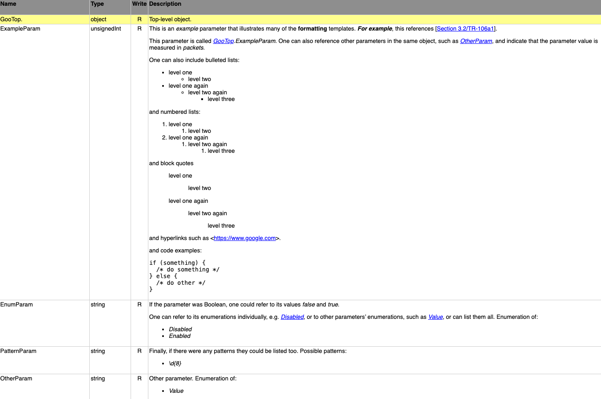

TR-106 – Data Model Template for CWMP Endpoints and USP Agents
Issue: 1 Amendment 12
Issue Date: June 2023
Cover Page
List of Figures
List of Tables
- XML Description Markup
- XML Description Templates
- XML Named Data Types
- XML Data Type Facets
- Path Name Scope Definition
- PathRef Facet Definition
- InstanceRef Facet Definition
- EnumerationRef Facet Definition
- XML Facet Inheritance Rules
- XML Glossary Items
- XML Abbreviation Items
- XML Bibliographic References
- XML Template Elements
- XML Component Definition
- XML Root and Service Objects
- XML Parameter Definition
- XML Parameter Syntax
- XML Command Definition
- XML Command Input / Output Arguments Definition
- XML Object Definition
- XML Table Definition
- XML Profile Definition
- XML Parameter Modification
- XML Command Modification
- XML Event Modification
- XML Object Modification
- XML Profile Modification
- XML Description Modification
- DMR Schema Usage
Notice
The Broadband Forum is a non-profit corporation organized to create guidelines for broadband network system development and deployment. This Technical Report has been approved by members of the Forum. This Technical Report is subject to change. This Technical Report is owned and copyrighted by the Broadband Forum, and all rights are reserved. Portions of this Technical Report may be owned and/or copyrighted by Broadband Forum members.
Intellectual Property
Recipients of this Technical Report are requested to submit, with their comments, notification of any relevant patent claims or other intellectual property rights of which they may be aware that might be infringed by any implementation of this Technical Report, or use of any software code normatively referenced in this Technical Report, and to provide supporting documentation.
Terms of Use
1. License
Broadband Forum hereby grants you the right, without charge, on a perpetual, non-exclusive and worldwide basis, to utilize the Technical Report for the purpose of developing, making, having made, using, marketing, importing, offering to sell or license, and selling or licensing, and to otherwise distribute, products complying with the Technical Report, in all cases subject to the conditions set forth in this notice and any relevant patent and other intellectual property rights of third parties (which may include members of Broadband Forum). This license grant does not include the right to sublicense, modify or create derivative works based upon the Technical Report except to the extent this Technical Report includes text implementable in computer code, in which case your right under this License to create and modify derivative works is limited to modifying and creating derivative works of such code. For the avoidance of doubt, except as qualified by the preceding sentence, products implementing this Technical Report are not deemed to be derivative works of the Technical Report.
2. NO WARRANTIES
THIS TECHNICAL REPORT IS BEING OFFERED WITHOUT ANY WARRANTY WHATSOEVER, AND IN PARTICULAR, ANY WARRANTY OF NONINFRINGEMENT AND ANY IMPLIED WARRANTIES ARE EXPRESSLY DISCLAIMED. ANY USE OF THIS TECHNICAL REPORT SHALL BE MADE ENTIRELY AT THE USER’S OR IMPLEMENTER’S OWN RISK, AND NEITHER THE BROADBAND FORUM, NOR ANY OF ITS MEMBERS OR SUBMITTERS, SHALL HAVE ANY LIABILITY WHATSOEVER TO ANY USER, IMPLEMENTER, OR THIRD PARTY FOR ANY DAMAGES OF ANY NATURE WHATSOEVER, DIRECTLY OR INDIRECTLY, ARISING FROM THE USE OF THIS TECHNICAL REPORT, INCLUDING BUT NOT LIMITED TO, ANY CONSEQUENTIAL, SPECIAL, PUNITIVE, INCIDENTAL, AND INDIRECT DAMAGES.
3. THIRD PARTY RIGHTS
Without limiting the generality of Section 2 above, BROADBAND FORUM ASSUMES NO RESPONSIBILITY TO COMPILE, CONFIRM, UPDATE OR MAKE PUBLIC ANY THIRD PARTY ASSERTIONS OF PATENT OR OTHER INTELLECTUAL PROPERTY RIGHTS THAT MIGHT NOW OR IN THE FUTURE BE INFRINGED BY AN IMPLEMENTATION OF THE TECHNICAL REPORT IN ITS CURRENT, OR IN ANY FUTURE FORM. IF ANY SUCH RIGHTS ARE DESCRIBED ON THE TECHNICAL REPORT, BROADBAND FORUM TAKES NO POSITION AS TO THE VALIDITY OR INVALIDITY OF SUCH ASSERTIONS, OR THAT ALL SUCH ASSERTIONS THAT HAVE OR MAY BE MADE ARE SO LISTED.
All copies of this Technical Report (or any portion hereof) must include the notices, legends, and other provisions set forth on this page.
Issue History
| Issue Number | Approval Date | Issue Editor | Changes |
|---|---|---|---|
| Issue 1 | September 2005 |
|
|
| Amendment 1 | November 2006 |
|
|
| Amendment 2 | November 2008 |
|
|
| Amendment 3 | September 2009 |
|
|
| Amendment 4 | February 2010 |
|
|
| Amendment 5 | November 2010 |
|
|
| Amendment 6 | July 2011 |
|
|
| Amendment 7 | September 2013 |
|
|
| Amendment 7 | September 2014 |
|
|
| Amendment 8 | May 2018 |
|
|
| Amendment 9 | September 2019 |
|
|
| Amendment 10 | November 2020 |
|
|
| Amendment 11 | January 2022 |
|
|
| Amendment 12 | June 2023 |
|
|
Broadband User Services Work Area Directors
- Jason Walls, QA Cafe
- John Blackford, CommScope
Project Stream Leaders
- Daniel Egger, Axiros
- William Lupton, Broadband Forum
Executive Summary
TR-106 specifies data model guidelines to be followed by all CWMP (TR-069) Endpoints and USP (TR-369) Agents. These guidelines include:
- Structural requirements for the data hierarchy
- Requirements for versioning of data models
- Requirements for defining profiles
As part of this data modeling framework, TR-106 defines two XML Schemas:
The Data Modeling (DM) Schema, which is used for defining all CWMP and USP data models. This makes data model definitions rigorous, and helps to reduce the danger that different implementations will interpret data model definitions in different ways.
The Device Type (DT) Schema, that allows a device to describe its supported CWMP data models. This description is both specific and detailed, allowing a Controller to know exactly what is supported by the device, including any vendor-specific objects and parameters. USP uses a different mechanism (GetSupportedDM message) for the same purpose; this mechanism is specified in TR-369.
The TR-106 GitHub repository contains the above schemas, support files (e.g., common bibliographic references and data types), and the TR-106 specification source. The rendered GitHub Pages documentation can be found at https://data-model-template.broadband-forum.org.
The TR-106 schemas and support files are also available at the CWMP data models and USP data models sites. These sites present integrated views of the CWMP and USP versions of the standard data models, and provide a convenient way of viewing current and past versions of the schemas and support files in context.
Important warning
The InternetGatewayDevice:1 (TR-098) and Device:1 (TR-181 Issue 1) Root Data Models are now DEPRECATED and any reference to elements specific to those models have been removed from this document.
The last revision of TR-106 to be used with those models is TR-106 Amendment 7.
TR-157 data models Components have been incorporated into Device:2.12. TR-157 is therefore also DEPRECATED.
1 Introduction
CWMP
TR-069 [7] defines the generic requirements of the CPE WAN Management Protocol (CWMP) methods which can be applied to any CWMP Endpoint. It is intended to support a variety of different functionalities to manage a collection of CPE, including the following primary capabilities:
Auto-configuration and dynamic service provisioning
Software/firmware image management
Status and performance monitoring
Diagnostics
The ability to manage the home network remotely has a number of benefits including reducing the costs associated with activation and support of broadband services, improving time-to-market for new products and services, and improving the user experience.
The following figure places TR-069 in the end-to-end management architecture:

The ACS is a server that resides in the network and manages devices in the subscriber premises. It uses the methods, or RPCs, defined in TR-069 to get and set the state of the device, initiate diagnostic tests, download and upload files, and manage events. Some portions of this state are common across managed devices and some are relevant only to certain device types or services.
USP
The User Services Platform supports a network of USP Controllers and USP Agents to allow applications to manipulate service elements (i.e. objects). It represents the evolution of CWMP into the following use cases:
Improvements on TR-069 based on deployment experience
Multi-tenant management of a given endpoint (that is, manipulation by multiple controllers)
Application to additional market spaces, including consumer electronics and the Internet of Things
An agent exposes service elements to one or more controllers, either directly or by proxy. An application could use a Controller to manage a provider controlled system, as in a CWMP ACS, or to act as a user portal in the cloud, on a gateway, or accessed through a smart phone. Agents and controllers can also be used in tandem to create a peer-to-peer network of smart applications, such as an automated smart home.

USP was designed in a modular manner, and can make use of the CWMP data model and data model schema in order to represent an evolution of CWMP into the world of consumer electronics, virtual services, and the Internet of Things. As such, this document describes how to use the data model schema in both the context of CWMP and USP.
Specification Structure
Figure 3 shows the overall specification structure for the CWMP [7] and USP [11] family of standards (as currently defined). Please note that this will gradually become out of date as new documents are published.
TR-069 [7] defines the generic requirements of the CWMP methods which can be applied to any CWMP Endpoint. TR-369 [11] does the same for USP Agents. TR-106 (this document) specifies a baseline object structure to be supported by any CWMP Endpoint or USP Agent (referred to generically as an Agent). It specifies how to structure and define data models, which are collections of objects and parameters on which the generic methods act to configure, diagnose, and monitor the state of specific devices and services. The actual data models are defined in their own specifications.
For a particular type of device, it is expected that the baseline defined in a document such as TR-181i2 [10] would be augmented with additional objects and parameters specific to the device type. The data model used in any Agent MUST follow the guidelines described in this document. These guidelines include the following aspects:
Structural requirements for the data hierarchy
Requirements for versioning of data models
Requirements for defining profiles
In addition, this document defines two XML Schemas:
An XML Schema that as far as possible embodies these guidelines, and which is used for defining all CWMP and USP data models. This makes data model definitions rigorous, and helps to reduce the danger that different implementations will interpret data model definitions in different ways.
An XML Schema that allows a device to describe its supported CWMP data models. This description is both specific and detailed, allowing an ACS to know exactly what is supported by the CPE, including any vendor-specific objects and parameters. Use of this Schema enhances interoperability and significantly eases the integration of new devices with an ACS.
Please note that USP uses a different mechanism (GetSupportedDM message) for the same purpose. It is specified in TR-369 [11].
1.1 Terminology
The following terminology is used throughout this Technical Report.
| ACS | Auto-Configuration Server. This is a component in the broadband network responsible for CWMP auto-configuration of the CPE for advanced services. |
| Agent | A generic term that refers (as appropriate) to either a CWMP Endpoint or to a USP Agent. |
| BBF | The Broadband Forum. |
| Base Supported Data Model | The Data Model that is supported by all CPE of a given make, model and firmware version. This refers to the Objects, Parameters, Commands and/or Events that have code support in the current firmware. |
| CPE | Customer Premises Equipment; refers (as appropriate) to any CWMP-enabled [7] or USP-enabled [11] device and therefore covers both Internet Gateway devices and LAN-side end devices. |
| Command | A named element allowing a USP Controller to execute an operation on a USP Agent. This concept does not apply to CWMP, which uses Objects and/or Parameters to simulate operations. |
| Component | A named collection of Objects, Parameters, Commands, Events and/or Profiles that can be included anywhere within a Data Model. |
| Controller | A generic term that refers (as appropriate) to either a CWMP ACS or a USP Controller. |
| Current Supported Data Model | The Data Model that is currently supported by an individual CPE, i.e. the Base Supported Data Model plus any additional Objects, Parameters, Commands and/or Events supported by extra modules that have been installed on the CPE. This refers to the Objects, Parameters, Commands and/or Events that have code support in the CPE. |
| CWMP | CPE WAN Management Protocol. Defined in TR-069 [7], CWMP is a communication protocol between an ACS and CWMP-enabled CPE that defines a mechanism for secure auto-configuration of a CPE and other CPE management functions in a common framework. |
| CWMP Endpoint | A CWMP termination point used by a CWMP-enabled CPE for communication with the ACS. |
| Data Model | A hierarchical set of Objects, Parameters, Commands and/or Events that define the managed Objects accessible via a particular Agent. |
| Device | Used here as a synonym for CPE. |
| DM Instance | Data Model Schema instance document. This is an XML document that conforms to the DM Schema and to any additional rules specified in or referenced by the DM Schema. |
| DM Schema | Data Model Schema. This is the XML Schema [12] that is used for defining data models for use with CWMP and USP. |
| DT Instance | Device Type Schema instance document. This is an XML document that conforms to the DT Schema and to any additional rules specified in or referenced by the DT Schema. This concept is useful for both CWMP and USP as an offline design tool, but only CWMP uses it at run-time (via the SupportedDataModel Object; see Section 2.1.2). |
| DT Schema | Device Type Schema. This is the XML Schema [12] that is used for describing a Device’s Supported Data Model. This concept is useful for both CWMP and USP as an offline design tool, but only CWMP uses it at run-time (via the SupportedDataModel Object; see Section 2.1.2). |
| Event | An indication that something of interest has happened that requires the Agent to notify the Controller. |
| Instantiated Data Model | The Data Model that currently exists on an individual CPE. This refers to the Object instances, Parameters, Commands and/or Events that currently exist within the data model. It can be thought of as the Current Supported Data Model with all the “{i}” placeholders expanded to be the actual Instance Numbers. For example, “Device.Services.ABCService.{i}.” in the Current Supported Data Model might correspond to “Device.Services.ABCService.1.” and “Device.Services.ABCService.2.” in the Instantiated Data Model. |
| Instance Alias | A writeable string that uniquely identifies an instance within a Multi-Instance Object |
| Instance Identifier | A value that uniquely identifies an instance within a Multi-Instance Object. It is either an Instance Number or an Instance Alias. |
| Instance Number | A read-only positive integer (>=1) that uniquely identifies an instance within a Multi-Instance Object. |
| Mountable Object | An Object that is a direct child of the Root
Object or Service Object, but whose DM Instance
does not declare it to be a Mount Point. Starting with DM
Schema v1.10 (TR-106 Amendment 12), all qualifying Objects
are automatically regarded as Mountable Objects. For example, the TR-181 Device:2 Data Model’s Device.DeviceInfo. object is (a) a direct child of the Device. Root Object, and (b) not declared as a Mount Point, so it’s a Mountable Object. This concept does not apply to CWMP. |
| Mount Point | An Object whose DM Instance specifies (via a
mountType=“mountPoint” attribute) that all Mountable Objects
are conceptually its direct children. For example, the TR-181 Device:2 Data Model’s DM Instance specifies that Device.ProxiedDevice.{i}. is a Mount Point. This means that Device.ProxiedDevice.{i}.ABC. conceptually exists for all Mountable Objects ABC. This concept does not apply to CWMP. |
| Multi-Instance Object | An Object that can have multiple instances, all of which are located at the same level within the name hierarchy. Each instance is identified by an Instance Identifier. |
| Object | An internal node in the name hierarchy, i.e., a node that can have Object, Parameter, Command and/or Event children. An Object name is a Path Name. |
| Parameter | A name-value pair that represents part of a CPE or USP Agent’s configuration or status. A Parameter name is a Path Name. |
| Path Name | A name that has a hierarchical structure similar to files in a directory, with each level separated by a “.” (dot). References an Object, Parameter, Command or Event. |
| Profile | A named collection of requirements relating to a given Root Object, Service Object or Component. |
| RPC | Remote Procedure Call. |
| Root Object | The top-level Object of a CPE’s Data Model that contains all of the manageable Objects. The name of the Root Object is “Device.”. |
| Service Element | A Service Element represents a piece of service functionality that is exposed by an Agent, usually represented by one or more Objects. |
| Service Object | The top-most Object associated with a specific service within which all Objects, Parameters, Commands and Events associated with the service are contained. |
| Supported Data Model | Refers to either Base Supported Data Model or Current Supported Data Model, depending on the context. |
| URI | Uniform Resource Identifier. |
| URL | Uniform Resource Locator. |
| USP | Universal Service Platform. Defined in TR-369, USP is an evolution of CWMP that allows applications to manipulate Service Elements in a network of Controllers and Agents. |
| USP Agent | A USP Agent is a USP Endpoint that exposes Service Elements to one or more USP Controllers. |
| USP Controller | A USP Controller is a USP Endpoint that manipulates Service Elements through one or more USP Agents. |
| USP Endpoint | A USP Endpoint is a termination point for a USP message. |
1.2 Document Conventions
The key words “MUST”, “MUST NOT”, “REQUIRED”, “SHALL”, “SHALL NOT”, “SHOULD”, “SHOULD NOT”, “RECOMMENDED”, “MAY”, and “OPTIONAL” in this document are to be interpreted as described in [3].
2 Architecture
All elements described hereunder apply to both CWMP and USP, unless specifically mentioned otherwise.
2.1 Data Hierarchy
The data model for a Agent will follow a common set of structural requirements. The detailed structure depends on the nature of the Agent.
An Agent’s data model will always have a single Root Object, which will be called “Device.”.
The Root Object contains three types of sub-elements: the Objects defined in TR-181i2 [10], Components defined in TR-181i2 or other specifications such as TR-143 [9], and a single “Services” object that contains all Service Objects associated with specific services.
A single Agent might include more than one Service Object. For example, a device that serves both as a VoIP endpoint and a game device, might include both VoIP-specific and game-specific Service Objects.
A single Agent might also include more than one instance of the same type of Service Object. An example of when this might be appropriate is an Agent that provides an instance of the TR-140 [8] StorageService for each of the device’s attached disks.
2.1.1 Data Hierarchy Requirements
A CWMP or USP data model MUST adhere to the following structural requirements:
A root data model definition MUST contain exactly one Root Object, called “Device.”.
A Root Object definition MUST contain exactly one “Services.” object.
A service data model definition MUST define an object hierarchy that starts just under the “Device.Services.” object.
For each Multi-Instance Object defined, a data model MUST also define a corresponding parameter indicating the number of instances of the Multi-Instance Object. The name of this parameter MUST be the name of the object concatenated with “NumberOfEntries”. This parameter MUST appear in the same object as the Multi-Instance Object it is related to.
Formally, the top level of the data hierarchy is defined as follows:
Element = "Device"
| "Device." TR-181DeviceObject
| "Device.Services." ServiceObject "NumberOfEntries"
| "Device.Services." ServiceObject ".{i}"
TR-181DeviceObject = // As defined in TR-181i2, e.g. "UserInterface" or "ManagementServer"
ServiceObject = // As defined in other specs, e.g. TR-1402.1.2 The Supported Data Model and the Instantiated Data Model
There is a distinction between an Agent’s Supported Data Model and its Instantiated Data Model.
The Supported Data Model is those Objects and/or Parameters that have code support in the Agent.
The Instantiated Data Model is those Object instances and/or Parameters that currently exist.
TR-181i2 [10] defines a SupportedDataModel Object that allows an Agent to indicate its Supported Data Model to a Controller, which assists the Controller in managing that device.
The SupportedDataModel object has the following properties:
It contains a list of URLs, each of which allows the Controller to determine details of part of the Supported Data Model.
When the Supported Data Model changes, e.g. because software is loaded or unloaded, entries are added to or removed from this list of URLs.
This object is not used with USP. TR-369 [11] defines the GetSupportedDM message to provide this information.
2.1.3 Mount Points and Mountable Objects
As specified in Section 1.1, a Mount Point is a place in the Data Model hierarchy where Mountable Objects can be mounted. A Data Model definition will typically define only a few Mount Points, but (starting with DM Schema v1.10) all top-level Objects other than Mount Points are Mountable Objects.
For example, the TR-181i2 [10] Device:2 Data Model currently defines these three Mount Points:
- Device.Node.{i}.
- Device.ProxiedDevice.{i}.
- Device.ProxiedDevice.{i}.Node.{i}.
Apart from the Device.Node.{i}. and Device.ProxiedDevice.{i}. Mount Points, every direct child of the Device. Root Object is a Mountable Object. So, for example, these are all Mountable Objects:
- Device.DeviceInfo.
- Device.InterfaceStack.{i}.
- Device.IP.
- Device.QoS.
Taking Device.DeviceInfo. as an example, this means that all of the following are valid Path Names:
- Device.DeviceInfo.
- Device.Node.{i}.DeviceInfo.
- Device.ProxiedDevice.{i}.DeviceInfo.
- Device.ProxiedDevice.{i}.Node.{i}.DeviceInfo.
Only the first of these is defined explicitly in the DM Instance, but the others are equally valid, and indeed could be defined explicitly via Components.
DM Instance authors need to ensure that Mountable Objects only use relative paths to reference other parts of the Data Model. If they used absolute paths (paths starting with “Device.”) then they would be referencing one of the Root Object’s or Service Object’s top-level Objects. Therefore, as specified in A.2.3.4, all such references will start with a dot (so they’re relative to the Mount Point) or be relative to the current Object. Given that nearly all top-level Objects can be Mountable Objects, this implies that absolute paths will rarely (if ever) be used.
Note that if a Mountable Object is a table then its “NumberOfEntries” parameter is regarded as part of the Mountable Object and will exist in the parent Mount Point. For example, if Device.InterfaceStack.{i}. is mounted at Device.ProxiedDevice.{i}. then both Device.ProxiedDevice.{i}.InterfaceStack.{i}. and Device.ProxiedDevice.{i}.InterfaceStackNumberOfEntries will be valid Path Names.
2.2 Object Versioning
To allow the definition of a Service Object or Root Object to change over time, the definition of a Service Object or Root Object MUST have an explicitly specified version.
Version numbering of Service Objects and Root Objects is defined to use a major/minor version numbering convention. The object version is defined as a pair of integers, where one integer represents the major version, and the second integer represents the minor version. The version MUST be written with the two integers separated by a dot (Major.Minor).
The first version of a given object SHOULD be defined as version “1.0”.
For each subsequent version of the object, if the later version is compatible with the previous version, then the major version SHOULD remain unchanged, and the minor version SHOULD be incremented by one. For example, the next compatible version after “2.17” would be “2.18”. The requirements for a version to be considered compatible with an earlier version are described in Section 2.2.1.
For each subsequent version of the object, if the later version is not compatible with the previous version, then the major version MUST increment by one, and the minor version MAY reset back to zero. For example, the next incompatible version after “2.17” might be “3.0”.
2.2.1 Requirements for Compatible Versions
For one version of an object to be considered compatible with another version, the later version MUST be a strict superset of the earlier version. Using major/minor versioning, this requirement applies only between minor versions that share the same major version.
More specifically, this requires the following of the later version with respect to all earlier versions to which it is to be compatible:
The later version MAY add objects and parameters not previously in any earlier version, but MUST NOT remove objects or parameters already defined in earlier versions.
The later version MUST NOT modify the definition of any parameter or object already defined in an earlier version (unless the original definition was clearly in error and has to be modified as an erratum or clarified through a corrigendum process).
The later version MUST NOT require any of the objects or parameters that have been added since the earliest compatible version to be explicitly operated upon by the Controller to ensure proper operation of the device (except those functions specifically associated with functionality added in later versions). That is, the later version will accommodate a Controller that knows nothing of elements added in later versions.
The goal of the above definition of compatibility is intended to ensure bi-directional compatibility between a Controller and Agent. Specifically that:
If a Controller supports only an earlier version of an object as compared to the version supported by the Agent, the Controller can successfully manage that object in the Agent as if it were the earlier version.
If an Agent supports only an earlier version of an object as compared to the version supported by a Controller, the Controller can successfully manage that object in the Agent as if it were the later version (without support for new components defined only in later versions).
2.2.2 Version Notation
For objects, the following notation is defined to identify specific versions:
| Notation | Description | Example |
|---|---|---|
| ObjectName:Major.Minor | Refers to a specific version of the object. | Device:2.0 |
| ObjectName:Major | Refers to any minor version of the object with the specified major version. | Device:2 |
| ObjectName | Refers to any version of the object. | Device |
Note that the version notation defined here is only to be used for purposes of documentation. The actual names of objects and parameters in the data model MUST NOT include version numbers.
2.3 Profiles
Note: Originally, profiles were seen as a means of limiting the variability that a Controller needs to accommodate among various devices that it might manage. This feature is now provided:
For CWMP, by the TR-181i2 [10] SupportedDataModel object (see Section 2.1.2) and associated Device Type XML documents (DT Instances).
For USP, by the TR-369 [11] GetSupportedDM message.
A profile is a named collection of requirements associated with a given object. An Agent can adhere to zero or more profiles. Adherence to a profile means that the Agent supports all of the requirements defined by that profile. The use of profiles gives Service Providers a shorthand means of specifying data model support requirements.
The following sections define the conventions to be used when defining profiles associated with Data Models.
2.3.1 Scope of Profiles
A given profile is defined only in the context of a specific Service Object or Root Object with a specific major version. For each profile definition, the specific object name and major version to which the profile is to apply MUST be explicitly identified.
A profile’s name MUST be unique among profiles defined for the same object and major version, but a name MAY be reused to define a different profile for a distinct combination of object name and major version. For example, if we define profile “A” associated with object “X:2” (major version 2 of object X), the same name “A” might be used to define a different profile for object “Y:1” or for object “X:3”.
A given profile is defined in association with a minimum minor version of a given object. The minimum REQUIRED version of an object is the minimum version that includes all of the REQUIRED elements defined by the profile. For each profile definition, the specific minimum version MUST be explicitly identified.
2.3.2 Multiple Profile Support
For a given type of Service Object or Root Object, multiple profiles MAY be defined. Profiles MAY be defined that have either independent or overlapping requirements.
2.3.3 Profile Versions
To allow the definition of a profile to change over time, the definition of every profile MUST have an associated version number.
Version numbering of profiles is defined to use a minor-only version numbering convention. That is, for a given profile name, each successive version MUST be compatible with all earlier versions. Any incompatible change to a profile MUST use a different profile name.
For one version of a profile to be considered compatible with another version, the later version MUST be a strict superset of the earlier version. This requires the following of the later version with respect to all earlier versions to which it is to be compatible:
The later version MAY add requirements that were not in earlier versions of the profile, but MUST NOT remove requirements.
The later version MAY remove one or more conditions that had previously been placed on a requirement. For example, if a previous profile REQUIRED X only if condition A was True, then the later profile might require X unconditionally.
For profiles, the following notation is defined to identify specific versions:
| Notation | Description | Example |
|---|---|---|
| ProfileName:Version | Refers to a specific version of the profile. | Baseline:1 |
| ProfileName | Refers to any version of the profile. | Baseline |
ProfileName MUST start with a letter or underscore, and subsequent characters MUST be letters, digits, underscores or hyphens. The terms “letter” and “digit” are as defined in the XML specification [Appendix B/1].
Hyphens can easily be confused with the discretionary hyphens that are sometimes inserted by hyphenation algorithms. For this reason, ProfileName SHOULD NOT include any hyphens. In BBF standards, ProfileName will always start with an upper-case letter (or an underscore for an internal profile) and will never include any hyphens (see C.3.1 for the corresponding normative requirement).
2.3.4 Baseline Profiles
For every Service Object (and Root Object) there SHOULD be at least one profile defined. In many cases it is desirable to define a Baseline profile that indicates the minimum requirements REQUIRED for any device that supports that Object.
2.3.5 Types of Requirements in a Profile
Because a profile is defined within the context of a single Object (and major version), all of the requirements associated with the profile MUST be specific to the data model associated with that object.
Profile requirements can include any of the following types of requirements associated with an Object’s data model:
A requirement for read support of a Parameter.
A requirement for write support of a Parameter.
A requirement for support of a Command.
A requirement for support of a sub-Object contained within the overall Object.
A requirement for the ability to add or remove instances of a sub-Object.
A requirement to support active notification for a Parameter.
A requirement to support access control for a given Parameter.
For each of the requirement categories listed above, a profile can define the requirement unconditionally, or can place one or more conditions on the requirement. For example, a profile might require that a Parameter be supported for reading only if the device supports some other Parameter or Object (one that is not itself REQUIRED by the profile). Such conditions will be directly related to the data model of the overall object associated with the profile.
Because a device has to be able to support multiple profiles, all profiles MUST be defined such that they are non-contradictory. As a result, profiles MUST only define minimum requirements to be met, and MUST NOT specify negative requirements. That is, profiles will not include requirements that specify something that is not to be supported by the device, or requirements that exclude a range of values.
2.4 DEPRECATED and OBSOLETED Items
The key word “DEPRECATED” in a data model definition is to be interpreted as follows: This term refers to an object, parameter or parameter value that is defined in the current version of the standard but is meaningless, inappropriate, or otherwise unnecessary. It is intended that such objects, parameters or parameter values will be removed from the next major version of the data model. Requirements on how to interpret or implement deprecated objects, parameters or parameter values are given below. For more information on how to interpret or implement specific deprecated objects, parameters or parameter values, refer to the definition of the object or parameter.
The key word “OBSOLETED” in a data model definition is to be interpreted as follows: This term refers to an object, parameter or parameter value that meets the requirements for being deprecated, and in addition is obsolete. Such objects, parameters or parameter values can be removed from a later minor version of a data model, or from a later version of a profile, without this being regarded as breaking backwards compatibility rules. Requirements on how to interpret or implement obsoleted objects, parameters or parameter values are given below. For more information on how to interpret or implement specific obsoleted objects, parameters or parameter values, refer to the definition of the object or parameter.
If any items within a profile are DEPRECATED or OBSOLETED, then the profile MUST be (correspondingly) DEPRECATED or OBSOLETED, and it will be necessary to define a new profile version that omits any DEPRECATED or OBSOLETED items.
2.4.1 Requirements for DEPRECATED Items
This section defines requirements that apply to all DEPRECATED objects, parameters and parameter values unless specifically overridden by the object or parameter definition.
Data model requirements:
The definition of a DEPRECATED parameter, object or parameter value MUST include an explanation of why the item is deprecated.
The definition of a DEPRECATED parameter, object or parameter value MAY specify further requirements relating to the item; such requirements MAY override general Agent or Controller requirements regarding DEPRECATED elements specified in TR-069 [7] or TR-369 [11].
Agent requirements:
A DEPRECATED parameter MUST have a value which is valid for its data type and fulfils any range (for numeric parameters), length (for string, base64 or hexBinary parameters) and enumerated value (for string parameters) requirements.
Detailed behavioral requirements for a DEPRECATED parameter, e.g. that its value is a unique key, MAY be ignored by the Agent.
The Agent MUST, if such operations are permitted by the data model definition, permit creation of DEPRECATED objects, modification of DEPRECATED parameters, and setting of DEPRECATED parameter values. However, it MAY choose not to apply such changes to its operational state.
Regardless of whether DEPRECATED changes are applied to the Agent’s operational state, a read of a DEPRECATED writable parameter SHOULD return the value that was last written, i.e. the Agent is expected to store the value even if it chooses not to apply it to its operational state.
The Agent MAY reject an attempt by a Controller to set any parameter to a DEPRECATED value.
Controller requirements:
The Controller SHOULD NOT create DEPRECATED objects, modify DEPRECATED parameters, or set DEPRECATED parameter values.
The Controller SHOULD ignore DEPRECATED objects, parameters and parameter values.
The Controller SHOULD NOT set a DEPRECATED parameter to a value that is invalid for its data type or fails to fulfill any range (for numeric parameters), length (for string, base64 or hexBinary parameters) or enumerated value (for string parameters) requirements.
The Controller SHOULD NOT set any parameter to a DEPRECATED value.
2.4.2 Requirements for OBSOLETED Items
This section defines requirements that apply to all OBSOLETED objects, parameters or parameter values unless specifically overridden by the object or parameter definition.
An OBSOLETED object, parameter or parameter value MUST meet all the requirements of the previous section. In addition, the following requirements apply.
An OBSOLETED object, parameter or parameter value MAY be removed from a later minor version of a data model without this being regarded as breaking backwards compatibility rules.
An OBSOLETED object, parameter or parameter value MUST NOT be removed from the current version of a profile, but MAY be removed from a later version of a profile without this being regarded as breaking backwards compatibility rules.
A data model definition MUST include a list of those OBSOLETED objects, parameters or parameter values that have been removed from the data model or from its profiles. This is to prevent future namespace conflicts.
3 Object Definitions
3.1 General Notation
Parameter names use a hierarchical form similar to a directory tree. The name of a particular Parameter is represented by the concatenation of each successive node in the hierarchy separated with a “.” (dot), starting at the trunk of the hierarchy and leading to the leaves. When specifying a partial path, indicating an intermediate node in the hierarchy, the trailing “.” (dot) is always used as the last character.
Parameter names MUST be treated as case sensitive. The name of each node in the hierarchy MUST start with a letter or underscore, and subsequent characters MUST be letters, digits, underscores or hyphens. The terms “letter” and “digit” are as defined in the XML specification [Appendix B/1].
Hyphens can easily be confused with the discretionary hyphens that are sometimes inserted by hyphenation algorithms. For this reason, the names of nodes in the hierarchy SHOULD NOT include any hyphens. Additionally, the names of nodes in the hierarchy SHOULD NOT start with underscores. In BBF standards, the names of nodes in the hierarchy always start with an upper-case letter and never include any hyphens or underscores (see C.3.1 for the corresponding normative requirement).
Where multiple instances of an object can occur, the placeholder node name {i} is shown. In actual use, this placeholder is to be replaced by an Instance Identifier.
3.2 Data Types and Representation
Parameters make use of a limited subset of the default SOAP data types. The supported data types are defined by the DM Schema and are also listed in A.2.3.
The named data types that specify the representations of IP addresses, MAC addresses etc., are defined in a DM Instance document (see Annex A). The XML file with those definitions and the corresponding HTML file can be found in the data model resources page. Note that this DM Instance defines named data types that are expected to be used in several data model definitions; it is possible to define local named data types in any DM Instance document.
The following sub-sections specify additional rules governing parameter value representation within XML documents.
3.2.1 Date and Time Rules
All times MUST be expressed in UTC (Universal Coordinated Time) unless explicitly stated otherwise in the definition of a parameter of this type.
If absolute time is not available to the Agent, it SHOULD instead
indicate the relative time since boot, where the boot time is assumed to
be the beginning of the first day of January of year 1, or
0001 01 01T00:00:00. For example, 2 days, 3 hours, 4
minutes and 5 seconds since boot would be expressed as
0001 01 03T03:04:05. Relative time since boot MUST be
expressed using an untimezoned representation. Any untimezoned value
with a year value less than 1000 MUST be interpreted as a relative time
since boot.
If the time is unknown or not applicable, the following value
representing “Unknown Time” MUST be used:
0001-01-01T00:00:00Z. For an infinite timeline, the
following value representing “Infinite Time” MUST be used:
9999-12-31T23:59:59Z.
Any dateTime value other than one expressing relative time since boot
(as described above) MUST use UTC timezoned representation (that is, it
MUST include a timezone suffix of “Z”,
“-00:00” or “+00:00”).
3.2.2 Comma-separated Lists
For strings that are defined to contain comma-separated lists, the format is defined as follows. Between every pair of successive items in a comma-separated list there MUST be a separator. The separator MUST include exactly one comma character, and MAY also include one or more whitespace characters before or after the comma. The entire separator, including any whitespace characters, MUST NOT be considered part of the list items it separates. The last item in a comma-separated list MUST NOT be followed with a separator. Individual items in a comma-separated list MUST NOT include a whitespace or comma character within them. Any whitespace or comma characters within an item value MUST be escaped using percent-encoding as specified in RFC 3986 [2.1/5].
It is possible to create a list of lists, although other solutions SHOULD be preferred when possible. If a string contains a list of lists, the rules of the previous paragraph imply that the comma separators of the inner list will be percent encoded. For example, a three element list with elements “a”, “b,c” (a two element list) and “d” could be represented as “a,b%2Cc,d”. In order to avoid the need to percent encode the inner separators, inner lists MAY be “protected” by placing them within square brackets, e.g. the above list could be represented as “a,[b,c],d”. In order to avoid ambiguity (a Controller that didn’t understand the new syntax would interpret “a,[b,c],d” as the four element list “a”, “[b”, ”c]”, “d”), the data type and/or parameter definition MUST explicitly state that the new syntax is supported (A.2.3.1, A.2.7.1).
3.2.3 Parameters that Reference Parameters or Objects
For string parameters that are defined to contain the hierarchical Path Name of an object (or for each item in parameters that are defined to contain comma-separated lists of object Path Names), the representation of the object name MUST NOT include a trailing “dot.” An example of a parameter of this kind in the TR-181i2 [10] Device:2 data model is Device.InterfaceStack.{i}.LowerLayer. For this parameter, the following is an example of a properly formed value:
Device.Ethernet.Interface.1
Path Names in parameter values MUST always be full Path Names. NOTE: For CWMP there used to be an exception such that paths beginning with a dot were relative to the Root or Service Object, but this exception was removed in TR-106 Amendment 12.
In order to be able to use reference parameters as unique keys (A.2.10.1), if a reference parameter is list-valued, i.e. it is a list of Path Names or Instance Numbers, the parameter value MUST conceptually be regarded as a set when being compared, i.e. the comparison has to ignore the item order and any repeated items. For example, “1,2,1” and “2,1” would compare as equal because both reference instances 1 and 2.
References are defined as strong or weak in the data model. A strong reference always either references an existing parameter or object, or else is a null reference. On the other hand, a weak reference does not necessarily reference an existing parameter or object.
3.2.4 Units Conventions
For numeric parameters whose values are defined in terms of units, bit and byte-related units will always refer to powers of 2. For example, a kilobyte will always be 1024 bytes, a megabyte always 1024 * 1024 bytes, etc.
3.2.5 Default Maximum String Length
For string-valued parameters, a maximum length is either explicitly indicated or implied by the size of the elements composing the string. For strings in which the content is an enumeration, the longest enumerated value determines the maximum length. Similarly, for strings in which the content is a pattern, the longest possible matching value determines the maximum length. For strings in which the content is a list, the maximum number of items and the individual item lengths can help to determine the maximum string length.
3.3 Vendor-Specific Elements
A vendor MAY extend the standardized data model with vendor-specific elements (parameters, objects, commands, events). Vendor-specific elements MAY be defined either in a separate naming hierarchy or within the standardized naming hierarchy.
The name of a vendor-specific parameter, object, command, or event that is not contained within another vendor-specific object MUST have the form:
X_<VENDOR>_VendorSpecificName
In this definition <VENDOR> is a unique vendor identifier, which MAY be either an OUI or a domain name. The OUI or domain name used for a given vendor-specific parameter MUST be one that is assigned to the organization that defined this parameter (which is not necessarily the same as the vendor of the Agent). An OUI is an organizationally unique identifier as defined in [2], which MUST be formatted as a six-hexadecimal-digit string using all upper-case letters and including any leading zeros. A domain name MUST be upper case with each dot (“.”) replaced with a hyphen or underscore.
The VendorSpecificName MUST NOT contain a “.” (period) or a space character.
Note – the use of the string “X_” to indicate a vendor-specific parameter implies that no standardized parameter can begin with “X_”.
The name of a vendor-specific element that is contained within another vendor-specific object which itself begins with the prefix described above need not itself include the prefix.
The full Path Name of a vendor-specific element MUST NOT exceed 256 characters in length.
Below are some example vendor-specific element names:
A parameter:
Device.UserInterface.X_012345_AdBannerA single-instance object:
Device.X_EXAMPLE-COM_MyConfig.StatusA command:
Device.X_EXAMPLE-COM_MyCommand()An event:
Device.X_EXAMPLE-COM_MyEvent!When appropriate, a vendor MAY also extend the set of values of an enumeration. If this is done, the vendor-specified values MUST be in the form “X_<VENDOR>_VendorSpecificValue”. The total length of such a string MUST NOT exceed 31 characters.
4 Normative References
A list of the currently valid Broadband Forum Technical Reports is published at https://www.broadband-forum.org. The following documents are referenced by this specification.
Annex A: CWMP Data Model Definition XML Schema
- A.1 Introduction
- A.2 Normative Information
- A.2.1 Importing DM Instances
- A.2.2 Descriptions
- A.2.3 Data Types
- A.2.4 Glossary, Abbreviations, Bibliography and Templates
- A.2.5 Components
- A.2.6 Root and Service Objects
- A.2.7 Parameters
- A.2.8 Commands (USP Only)
- A.2.9 Events (USP Only)
- A.2.10 Objects
- A.2.11 Profiles
- A.2.12 Modifications
- A.2.13 Versions
- A.3 DM Schema
- A.4 DMR Schema
A.1 Introduction
The CWMP Data Model Definition XML Schema [12], or DM Schema, is used for defining CWMP [7] and USP [11] data models, and is specified in A.2.12.6.
DM Schema instance documents can contain any or all of the following:
Data type definitions
Root Object definitions (including profiles)
Service Object definitions (including profiles)
Component definitions
Vendor extension definitions
Annex C contains some additional normative requirements that apply only to BBF standard DM Schema instance documents.
Most of the data model elements are common to CWMP and USP. Those that are specific to either protocol will be noted in the description.
A.1.1 Character Encoding and Character Set
BBF standard DM Schema instance documents use UTF-8 encoding and their character set is restricted to printable ASCII characters. See C.2 for the corresponding normative requirements.
A.2 Normative Information
It is possible to create instance documents that conform to the DM Schema but nevertheless are not valid data model definitions. This is because it is not possible to specify all the normative data model definition requirements using the XML Schema language. Therefore, the schema contains additional requirements written using the usual normative language. Instance documents that conform to the DM Schema and meet these additional requirements are referred to as DM Instances.
For example, the definition of the parameter element includes the following additional requirements on the name and base attributes:
<xs:complexType name="ModelParameter">
<xs:annotation>
<xs:documentation>
Parameter definition and
reference.
</xs:documentation>
</xs:annotation>
...
<xs:attribute name="name" type="tns:ParameterName">
<xs:annotation>
<xs:documentation>
MUST be unique within the parent object
(this is checked by schema validation).
MUST be present if and only if defining a new
parameter.
</xs:documentation>
</xs:annotation>
</xs:attribute>
<xs:attribute name="base" type="tns:ParameterName">
<xs:annotation>
<xs:documentation>
MUST be present if and only if modifying an existing
parameter.
</xs:documentation>
</xs:annotation>
</xs:attribute>
...
</xs:complexType>In some cases, a requirement that is in fact implied by the DM Schema is emphasized within the schema via the xs:documentation element (the uniqueness requirement on the name is an example of this).
In other cases, a schema-implied requirement is not highlighted. For example, the name and base attributes are of type tns:ParameterName:
<!DOCTYPE cwmp-datamodel [
...
<!ENTITY name "([\i-[:]][\c-[:\.]]*)">
...
]>
...
<xs:simpleType name="ParameterName">
<xs:annotation>
<xs:documentation>Parameter name (maximum length 256); the same as xs:NCName except that periods are not permitted. This name MUST in addition follow the vendor-specific parameter name requirements of Section 3.3.</xs:documentation>
</xs:annotation>
<xs:restriction base="xs:token">
<xs:maxLength value="256"/>
<xs:pattern value="&name;"/>
</xs:restriction>
</xs:simpleType>This states that the parameter name is a string that follows the following rules:
It is derived from xs:token, which has a whitespace facet of “collapse”, meaning that any leading whitespace in the name will be ignored.
It has a maximum length of 256 characters.
Its first character matches the pattern “
[\i-:]]”, which means “any character permitted as the first character of an XML name, except for a colon”, and any subsequent characters match the pattern “[\c-[:\.]]”, which means “any character permitted in an XML name, except for a colon and a dot”.It follows the vendor-specific parameter name requirements of Section 3.3.
The question of the location of the definitive normative information therefore arises. The answer is as follows:
All the normative information in the main part of the document remains normative.
The DM Schema, and the additional requirements therein, are normative. Some of these additional requirements are duplicated (for emphasis) in this Annex.
The DM Schema references additional material in this Annex. Such material is normative.
If the DM Schema conflicts with a normative requirement in the main part of the document, this is an error in the DM Schema, and the requirement in the main part of the document takes precedence.
A.2.1 Importing DM Instances
DM Instances are imported using the top-level import element. The DM Schema specifies that the DM Instance is located via the file attribute.
The rules governing the file attribute’s value and its use for locating the DM Instance are as follows:
It MUST be a URL adhering to RFC 3986 [5].
If the URL includes a scheme, it MUST be http, https or ftp.
If the URL includes an authority, it MUST NOT include credentials.
For standard BBF DM Instances, the rules that apply to the filename part (final path segment) of the A.2.1.1 BBFURL also apply to the filename part of this URL. This means that the corrigendum number can be omitted in order to refer to the latest corrigendum. See C.3.6 for the corresponding normative requirement.
If the URL is a relative reference, processing tools MUST apply their own logic, e.g. apply a search path.
A.2.1.1 URI Conventions
The top-level spec attribute contains the URI of the associated specification document, e.g. the BBF Technical Report.
This URI SHOULD uniquely identify the specification. More than one DM Schema instance document MAY reference the same specification.
The top-level file attribute contains the name of the DM Schema instance document, e.g. the XML file that defines a given version of a data model.
The following rules apply to the value of the top-level spec attribute:
For a BBF Technical Report, it will be of the form “
urn:broadband-forum-org:tr-nnn-i-a-c”, where nnn is the specification number (including leading zeros), i is the issue number, a is the amendment number, and c is the corrigendum number. The issue, amendment and corrigendum numbers do not include leading zeros. For example, “urn:broadband-forum-org:tr-106-1-0” refers to TR-106 (Issue 1 Amendment 0), and “urn:broadband-forum-org:tr-106-1-2” refers to TR-106 (Issue 1) Amendment 2. See C.3.4 for the corresponding normative requirement.For specifications issued by other standards organizations, or by vendors, it SHOULD be of a standard form if one is defined. For example, RFC 2648 [4] specifies a syntax for referencing RFCs.
Note that processing tools are likely to assume that all files that share a spec value are related to each other. Therefore, use of meaningful spec values is RECOMMENDED.
The following rules apply to the value of the top-level file attribute.
For a BBF Technical Report, it will be of the form “
tr-nnn-i-a-c.xml” or “tr-nnn-i-a-c-label.xml”, where nnn, i, a and c are the same as in the spec attribute. The label, which MUST NOT begin with a digit, is not needed if only one DM Schema instance document is associated with the specification. See C.3.5 for the corresponding normative requirement.It SHOULD be the same as the actual file name (omitting the directory name). Under some circumstances this will not be possible, e.g. because the content is stored in a database and not in a file system.
Formally, the values of the spec and file attributes are defined as follows:
SpecAttr = SpecURI
FileAttr = FileName
SpecURI = BBFURI
| OtherURI
BBFURI = "urn:broadband-forum-org:" BBFDoc
FileName = BBFDoc BBFSubDoc ".xml"
BBFDoc = "tr-" BBFNumber BBFIssue BBFAmendment BBFCorrigendum
BBFNumber = [DIGIT]{3,} // including leading zeros, e.g. 069
BBFIssue = "-" NoLeadingZeroPositiveNumber
BBFAmendment = "-" NoLeadingZeroNumber
BBFCorrigendum = "-" NoLeadingZeroNumber
BBFSubDoc = "-" LABEL // distinguishing label (not beginning with a digit)
| "" // not needed if only one DM Instance is associated with spec
NoLeadingZeroNumber = [DIGIT]
| [NONZERODIGIT] [DIGIT]*
NoLeadingZeroPositiveNumber = [NONZERODIGIT] [DIGIT]*
OtherURI = <of a standard form if one is defined>Standard BBF DM Instances can be accessed at the following URL:
BBFURL = "https://www.broadband-forum.org/cwmp/" FileName
FileName = <as before, except that BBFCorrigendum is modified as follows:>
BBFCorrigendum = "-" NoLeadingZeroNumber
| "" // if omitted, most recent corrigendum is assumedFor example, the DM Instance associated with TR-181 Issue 2 Amendment 11 can be accessed at https://www.broadband-forum.org/cwmp/tr-181-2-11-0.xml.
A.2.2 Descriptions
Many elements have descriptions, and the same rules apply to all description elements in the DM Schema. A description is free text which can contain a limited amount of MediaWiki-like markup as specified in A.2.2.3.
A.2.2.1 Character Set
Character set requirements apply to the entire DM Instance, so the contents of this section have been moved to C.2, which contains the normative requirements that apply to standard BBF DM Instances.
A.2.2.2 Pre-processing
All DM Instance processing tools MUST conceptually perform the following pre-processing before interpreting the markup:
Remove any leading whitespace up to and including the first line break. Note: It can be assumed that all line breaks are represented by a single line feed, i.e. ASCII 10. See C.2.
Remove the longest common whitespace prefix (i.e. that occurs at the start of every line) from each line. See the example below, where three lines start with four spaces and one line starts with five spaces, so the longest whitespace prefix that occurs at start of each line is four spaces. In this calculation, a tab character counts as a single character. To avoid confusion, the description SHOULD NOT contain tab characters.
Remove all trailing whitespace, including line breaks.
This pre-processing is designed to permit a reasonable variety of layout styles while still retaining predictable behavior. For example, both the following:
<description>This is the first line.
This is the second line.
This is the indented third line.
This is the fourth line.</description>And:
<description>
This is the first line.
This is the second line.
This is the indented third line.
This is the fourth line.
</description>…result in the following:
This is the first line.
This is the second line.
This is the indented third line.
This is the fourth line.A.2.2.3 Markup
The pre-processed description can contain the following markup, which is inspired by, but is not identical to, MediaWiki markup. All DM Instance processing tools SHOULD support this markup to the best of their ability.
| Name | Markup Example | Description |
|---|---|---|
| Italics | ''italic text'' |
Two apostrophes on each side of some text will result in the contained text being emphasized in italics. |
| Bold | '''bold text''' |
Three apostrophes on each side of some text will result in the contained text being emphasized in bold. |
| Bold italics | '''''b+i text''''' |
Five apostrophes on each side of some text will result in the contained text being emphasized in bold italics. |
| Paragraph | This paragraph just ended. | A line break is interpreted as a paragraph break. |
| Bulleted lists | * level one** level two* level one again** level two again*** level three*: level one continuedoutside of list |
A line starting with one or more asterisks (*) denotes a bulleted
list entry, whose indent depth is proportional to the number of
asterisks specified. If the asterisks are followed by a colon (:), the previous item at that level is continued, as shown. An empty line, or a line that starts with a character other than an asterisk, indicates the end of the list. |
| Numbered lists | # level one## level two# level one again## level two again### level three#: level one continuedoutside of list |
A line starting with one or more number signs (#) denotes a numbered
list entry. All other conventions defined for bulleted lists apply here (using # rather than *), except that numbered list entries are prefixed with an integer decoration rather than a bullet. |
| Indented lists | : level one:: level two: level one again:: level two again::: level threeoutside of list |
A line starting with one or more colons (:) denotes an indented list
entry. All other conventions defined for bulleted lists apply here (using : rather than *), except that indented list entries have no prefix decoration, and item continuation is not needed. |
| Verbatim | code example:if (something){/* do something */} else {/* do other */} |
A block of lines each of which starts with a space is to be
formatted exactly as typed, preferably in a fixed width font. This allows code fragments, simple tables etc. to be included in descriptions. Note that the pre-processing rules of A.2.2.2 imply that it is not possible to process an entire description as verbatim text (because all the leading whitespace would be removed). This is not expected to be a problem in practice. |
| Hyperlinks | https://www.broadband-forum.org |
URL links are specified as plain old text (no special markup). |
| Templates | {{bibref|1|section 2}}{{section|table}}{{param|Enable}}{{enum|Error}} |
Text enclosed in double curly braces ({}) is a template reference,
which is replaced by template-dependent text. A.2.2.4 specifies the standard templates. |
A.2.2.4 Templates
The term “template” is used for both template elements (A.2.4.4) and for the description templates described here.
A template invocation is encoded as two curly braces on either side
of the template name and arguments. Arguments can follow the template
name, separated by vertical pipe (|) characters. All
whitespace is significant. For example:
{{someTemplate|arg1|arg2|...|argN}}
In some cases, one template can impact the behavior of another
template, e.g. the definitions of both the {{enum}} and the
{{hidden}} templates state that the template expansion can
be automatically placed after the rest of the description, which raises
the question of which template expansion would come first. This
ambiguity is resolved by stating that processing tools SHOULD generate
such automatic text in the same order that the templates are defined
below. In the above example, {{enum}} is defined before
{{hidden}}, so an automatically-generated list of
enumeration values would be placed before an automatically-generated
explanation that the parameter value is hidden.
The following standard templates are defined. Any vendor-specific template names MUST obey the rules of Section 3.3.
| Name | Markup Definition | Description |
|---|---|---|
| Glossary reference | {{gloref|id}} |
Glossary reference. The id argument MUST match the id attribute of
one of the current file’s (or an imported file’s) top-level glossary
element’s item elements (A.2.4.1). Typically, processing tools will (a) validate the id, and (b) replace the template reference with something like “id”. Markup examples: {{gloref|Parameter}} |
| Abbreviation reference | {{abbref|id}} |
Abbreviation reference. The id argument MUST match the id attribute
of one of the current file’s (or an imported file’s) top-level
abbreviations element’s item elements (A.2.4.2). Typically, processing tools will (a) validate the id, and (b) replace the template reference with something like “id”. Markup examples: {{abbref|CWMP}} |
| Approval date | {{appdate|date}} |
The date on which this file was approved. The date argument SHOULD be of the form “day month year” where “day” is the OPTIONAL day number (no leading zero), “month” is the full (capitalized) month name, and “year” is the year (including century). Markup examples: {{appdate|5 November 2011}}{{appdate|November 2012}} |
| Document name | {{docname|name}} |
The DM Instance name or title. The name argument MUST distinguish this file from other different files but not from other versions of the same file or data model. Markup examples: {{docname|Device Data Model for TR-069}} |
| TR name | {{trname|name}} |
The name and version of the corresponding Word / PDF document. The name argument MUST identify the Word / PDF document corresponding to this DM Instance, and be of the form “TR-nnnixaycz” as defined in A.2.4.3. Markup examples: {{trname|TR-181i2a5}} |
| XML reference | {{xmlref|ref}}{{xmlref|ref|label}} |
A reference to this or another DM Instance. The ref argument MUST identify a DM Instance and be the filename part of the referenced DM Instance (a) optionally omitting the corrigendum number, and (b) omitting the trailing “.xml”. The OPTIONAL label argument MAY be used by processing tools as a user-visible label; if it is omitted, processing tools will derive the label from the value of the ref argument. Typically, processing tools will (a) validate the reference, and (b) replace the template reference with the label, possibly rendered in a distinctive font, and (if referencing a different file) a hyperlink. Markup examples: {{xmlref|tr-181-2-5}}{{xmlref|tr-196-2-0-1|Corrigendum 1}} |
| Bibliographic reference | {{bibref|id}}{{bibref|id|section}} |
A bibliographic reference. The id argument MUST match the id attribute of one of the current file’s (or an imported file’s) top-level bibliography element’s reference elements (A.2.4.3). The OPTIONAL section argument specifies the section number, including any leading “section”, “annex” or “appendix” text. Typically, processing tools will (a) validate the id, and (b) replace the template reference with something like “[id] section”. Markup examples: {{bibref|RFC3986}}{{bibref|RFC3986|Section 3}} |
| Template reference | {{template|id}} |
A template element reference. The id argument MUST match the id attribute of one of the current file’s (or an imported file’s) top-level template elements (A.2.4.4). Markup examples: {{template|BULK-DATA-HTTP-REF}} |
| Section separator | {{section|category}}{{section}} |
The beginning or end of a section or category. This is a way of
splitting the description into sections. If the category argument is present, this marks the end of the previous section (if any), and the beginning of a section of the specified category. The “table”, “row” and “examples” categories are reserved for the obvious purposes. If the category argument is absent, this marks the end of the previous section (if any). Typically, processing tools will (a) validate the category, and (b) replace the template reference with a section marker. Markup examples: {{section|table}}{{section|row}}{{section|examples}} |
| Number of entries parameter description | {{numentries}} |
A description of a “NumberOfEntries” parameter. This template SHOULD be used for all such parameters. It will be expanded to something like “The number of entries in the <table> table.”. In most cases, the description will consist only of {{numentries}} but it MAY be followed by additional text if
desired. |
| Deprecated, obsoleted or deleted indication | {{deprecated|version|reason}}{{obsoleted|version}}{{obsoleted|version|reason}}{{deleted|version}}{{deleted|version|reason}} |
An indication that a parameter, command, event, object, enumeration
value or pattern was deprecated (or obsoleted or deleted) in the
specified data model version, for the specified reason. The reason argument is a fragment of text that SHOULD be incorporated into the template expansion. It’s OPTIONAL when obsoleting or deleting an item. Typically, processing tools will (a) validate that use of the template is consistent with the item status, (b) check for late (overdue) or too-early item status transitions, and (c) replace the template reference with text of the form “This <itemType> was <transition> in <version> <reason>.” (where <itemType> is parameter, object etc., and <transition> is the capitalized template name, i.e. DEPRECATED, OBSOLETED or DELETED). |
| Parameter, command, event and object reference | {{param}}{{param|ref}}{{param|ref|scope}}{{command}}{{command|ref}}{{command|ref|scope}}{{event}}{{event|ref}}{{event|ref|scope}}{{object}}{{object|ref}}{{object|ref|scope}} |
A reference to the specified parameter, command, event or
object. The OPTIONAL ref and scope arguments reference the specified item (scope defaults to normal). Item names SHOULD adhere to the rules of A.2.3.4. The scope argument can include a deprecated, obsoleted or deleted status, e.g. it might be deprecated or normal,deprecated. Such a status value can be specified in order to suppress processing tool warnings when an item references a “more deprecated” item. For example, {{param|ref|deprecated}} allows a non-deprecated item to
reference a deprecated parameter without a warning.Typically, processing tools will (a) validate the reference, and (b) replace the template reference with the ref argument or, if it is omitted, the current item name, possibly rendered in a distinctive font. Processing tools can use the scope to convert a relative path into an absolute path in order, for example, to generate a hyperlink. Markup examples: {{param|Enable}}{{command|Reset()}}{{event|Boot!}}{{object|Stats.}} |
| Profile reference | {{profile|ref}}{{profile}} |
A reference to the specified profile. The OPTIONAL ref argument references a profile. Typically, processing tools will (a) validate the reference, and (b) replace the template reference with the ref argument or, if it is omitted, the current profile name, possibly rendered in a distinctive font. Markup examples: {{profile|Baseline:1}}{{profile}} |
| List description | {{list}}{{list|arg}}{{nolist}} |
A description of the current parameter’s list attributes. This template SHOULD only be used within the description of a list-valued parameter (A.2.7.1). This is a hint to processing tools to replace the template reference with a description of the parameter’s list attributes. This overrides processing tools’ expected default behavior (unless suppressed by {{nolist}}) of describing the list attributes before the
rest of the description.The OPTIONAL argument specifies a fragment of text that describes the list and SHOULD be incorporated into the template expansion. Typically processing tools will generate text of the form “Comma-separated list of <dataType>.” or “Comma-separated list of <dataType>, <arg>.”. |
| Reference description | {{reference}}{{reference|arg}}{{reference|arg|opts}}{{noreference}} |
A description of the object or parameter that is referenced by the
current parameter. This template SHOULD only be used within the description of a reference parameter (A.2.3.7). This is a hint to processing tools to replace the template reference with a description of the parameter’s reference attributes. This overrides processing tools’ expected default behavior (unless suppressed by {{noreference}}) of describing the reference attributes
after the list attributes (for a list-valued parameter) or before the
rest of the description (otherwise).The OPTIONAL arg argument is relevant only for a pathRef; it specifies a fragment of text that describes the referenced item and SHOULD be incorporated into the template expansion. The OPTIONAL opts argument is a comma-separated list of keywords that give additional information about the reference and can affect the generated text. The following keywords are currently defined: - ignore: ignore any non-existent targetParents; this is useful when a parameter references different objects in different data models. - delete: this object (the referencing object) and the referenced object have the same lifetime, so this object will always be deleted when the referenced object is deleted; therefore the reference can never be null. Typically processing tools will generate text of the form “The value MUST be the full path name of <arg>…”, in which the generated text can be expected to be sensitive to whether or not the parameter is list-valued. Markup examples: {{reference|a protocol object}}{{reference|all Host table entries|ignore}} |
| Named data type | {{datatype}}{{datatype|arg}}{{nodatatype}} |
A description of the current parameter’s named data type. This template SHOULD only be used within the description of a parameter of a named data type (A.2.3.1). This is a hint to processing tools to replace the template reference with an indication of the parameter’s named data type, possibly including additional details or a hyperlink to such details. This overrides processing tools’ expected default behavior (unless suppressed by {{nodatatype}}) of describing the named data type before
the rest of the description.The OPTIONAL argument affects how the data type is described. If it has the literal value “expand”, processing tools SHOULD replace the template reference with the actual description of the named data type (as opposed to referencing the description of the named data type). |
| Profile description | {{profdesc}}{{noprofdesc}} |
An auto-generated description of a profile. This template SHOULD only be used within the description of a profile (A.2.11). This is a hint to processing tools to replace the template reference with a description of the profile. This overrides processing tools’ expected default behavior (unless suppressed by {{noprofdesc}}) of describing the profile before the rest
of the description.Typically processing tools will generate text of the form “This table defines the <profile:v> profile for the <object:m> object. The minimum REQUIRED version for this profile is <object:m.n>.” (or more complex text if the profile is based on or extends other profiles). |
| Enumeration reference | {{enum|value}}{{enum|value|param}}{{enum|value|param|scope}}{{enum}}{{noenum}} |
A reference to the specified enumeration value. The OPTIONAL value argument specifies one of the enumeration values for the referenced parameter. If present, it MUST be a valid enumeration value for that parameter. The OPTIONAL param and scope arguments identify the referenced parameter (scope defaults to normal). If present, param SHOULD adhere to the rules of A.2.3.4. If omitted, the current parameter is assumed. If the arguments are omitted, this is a hint to processing tools to replace the template reference with a list of the parameter’s enumerations, possibly preceded by text such as “Enumeration of:”. This overrides processing tools’ expected default behavior (unless suppressed by {{noenum}}) of listing the parameter’s enumerations
after the rest of the description.Otherwise, typically processing tools will (a) validate that the enumeration value is valid, and (b) replace the template reference with the value and/or param arguments, appropriately formatted and with the value possibly rendered in a distinctive font. Processing tools can use the scope to convert a relative path into an absolute path in order, for example, to generate a hyperlink. Markup examples: {{enum|None}}{{enum|None|OtherParam}} |
| Pattern reference | {{pattern|value}}{{pattern|value|param}}{{pattern|value|param|scope}}{{pattern}}{{nopattern}} |
A reference to the specified pattern value. The OPTIONAL value argument specifies one of the pattern values for the referenced parameter. If present, it MUST be a valid pattern value for that parameter. The OPTIONAL param and scope arguments identify the referenced parameter (scope defaults to normal). If present, param SHOULD adhere to the rules of A.2.3.4. If omitted, the current parameter is assumed. If the arguments are omitted, this is a hint to processing tools to replace the template reference with a list of the parameter’s patterns, possibly preceded by text such as “Possible patterns:”. This overrides processing tools’ expected default behavior (unless suppressed by {{nopattern}}) of listing the parameter’s patterns after
the rest of the description.Otherwise, typically processing tools will (a) validate that the pattern value is valid, and (b) replace the template reference with the value and/or param arguments, appropriately formatted and with the value possibly rendered in a distinctive font. Processing tools can use the scope to convert a relative path into an absolute path in order, for example, to generate a hyperlink. Markup examples: {{pattern|None}}{{pattern|None|OtherParam}} |
| Hidden value | {{hidden}}{{hidden|value}}{{nohidden}} |
Text explaining that the value of the current parameter is hidden.
This template SHOULD only be used within the description of a hidden
parameter (A.2.7.1). This is a hint to processing tools to replace the template reference with text explaining that the value of the current parameter is hidden. This overrides processing tools’ expected default behavior (unless suppressed by {{nohidden}}) of placing this text after the
rest of the description.The OPTIONAL argument indicates the value that is returned when the current parameter is read. If omitted this defaults to the expansion of the {{null}} template.Typically, processing tools will generate text of the form “When read, this parameter returns <arg>, regardless of the actual value.”. |
| Secured value | {{secured}}{{secured|value}}{{nosecured}} |
Text explaining that the value of the current parameter is secured.
This template SHOULD only be used within the description of a secured
parameter (A.2.7.1). This is a hint to processing tools to replace the template reference with text explaining that the value of the current parameter is secured. This overrides processing tools’ expected default behavior (unless suppressed by {{nosecured}}) of placing this text after the
rest of the description.The OPTIONAL argument indicates the value that is returned when the Controller is not permitted to see the value. If omitted this defaults to the expansion of the {{null}} template.Typically, processing tools will generate text of the form “When read, this parameter returns <arg>, regardless of the actual value, unless the Controller has a ‘secured’ role.”. |
| Command parameter | {{command}}{{nocommand}} |
Text explaining that the current parameter is a command parameter
that triggers an Agent action. This template SHOULD only be used within
the description of such a command parameter (A.2.7.1). This is a hint to processing tools to replace the template reference with text explaining that the current parameter is a command parameter that always reads back as {{null}}. This overrides
processing tools’ expected default behavior (unless suppressed by
{{nocommand}}) of placing this text after the rest of the
description. Typically, processing tools will generate text of the form
“The value is not part of the device configuration and is always
{{null}} when read.”.Note that the same {{command}} template can also be used by
a USP command to refer to itself. |
| Factory default value | {{factory}}{{nofactory}} |
Text listing the factory default for the current parameter. This
template SHOULD only be used within the description of a parameter that
has a factory default value. This is a hint to processing tools to replace the template reference with text listing the factory default value. This overrides processing tools’ expected default behavior (unless suppressed by {{nofactory}}) of placing this text after the rest of the
description. Typically, processing tools will generate text of the form
“The factory default value MUST be <value>.”. |
| Implementation default value | {{impldef}}{{noimpldef}} |
Text listing the implementation default for the current parameter.
This template SHOULD only be used within the description of a parameter
that has an implementation default value. This is a hint to processing tools to replace the template reference with text listing the implementation default value. This overrides processing tools’ expected default behavior (unless suppressed by {{noimpldef}}) of placing this text after the rest of the
description. Typically, processing tools will generate text of the form
“The default value SHOULD be <value>.”. |
| Parameter default value | {{paramdef}}{{noparamdef}} |
Text listing the parameter default for the current argument. This
template SHOULD only be used within the description of an argument that
has a parameter default value. This is a hint to processing tools to replace the template reference with text listing the parameter default value. This overrides processing tools’ expected default behavior (unless suppressed by {{noparamdef}}) of placing this text after the rest of the
description. Typically, processing tools will generate text of the form
“The default value MUST be <value>.”. |
| Unique keys description | {{keys}}{{nokeys}} |
A description of the current object’s unique keys. This template SHOULD only be used within the description of a Multi-Instance Object (table) that defines one or more unique keys (A.2.10.1). This is a hint to processing tools to replace the template reference with a description of the object’s unique keys. This overrides processing tools’ expected default behavior (unless suppressed by {{nokeys}}) of describing the unique keys after the
description. |
| Units reference | {{units}} |
The parameter’s units string. Typically, processing tools will (a) check that the parameter has a units string, and (b) substitute the value of its units string. |
| Boolean values | {{false}}{{true}} |
Boolean values. Typically, processing tools will substitute the value False or True, possibly rendered in a distinctive font. |
| Discriminator parameter description | {{union}}{{nounion}} |
Text explaining the available options and use for the sub-objects
which are part of the union. This template SHOULD only be used within the description of (a) a parameter referenced as a discriminatorParameter, or (b) an object that references a discriminatorParameter (A.2.10.1). This is a hint to processing tools to replace the template reference with text explaining the union and possible choices of sub-objects. This overrides processing tools’ expected default behavior (unless suppressed by {{nounion}}) of placing this text after the rest of the
description.Typically, processing tools will generate text of the form (a) “This parameter discriminates between the <objects> union objects.”, or (b) “This object MUST be present if, and only if, <param> is <object>.”, but it MAY be followed by additional text, explaining the use of the available options, if desired. |
| Miscellaneous | {{issue|descr}}{{issue|opts|descr}} |
An open issue. If only one argument is supplied, it is descr, which describes the open issue. If two arguments are supplied, they are opts and descr. The OPTIONAL opts argument is a comma-separated list of options: - The first list item is an issue category that defaults to “XXX”. - The second list item is an issue status that defaults to an empty string. Any non-empty status implies that the issue has been resolved. Typically, processing tools will assign a unique ID, e.g. a separate counter for each category of issue, and replace the template reference with the issue category, ID, status and description, possibly rendered in a distinctive font. Markup examples: {{issue|Will be labeled XXX.}}{{issue|IPsec|Will be labeled IPsec.}}{{issue|DNS,fixed|Resolved DNS issue.}} |
{{empty}} |
Represents an empty string. Typically, processing tools will render such values in a distinctive font, possibly using standard wording, such as <Empty> or “an empty string”. | |
{{null}} |
Expands to the appropriate null value for the current parameter’s
data type (A.2.3.5), e.g. {{empty}},
{{false}} or 0. |
A.2.2.5 HTML Example
This includes examples of most of the markup and templates.
<model name="Goo:1.1" base="Goo:1.0">
<object name="GooTop." access="readOnly" minEntries="1" maxEntries="1">
<parameter name="ExampleParam" access="readOnly">
<description>
{{section|Introduction}}This is an ''example'' parameter that
illustrates many of the '''formatting''' templates. For
'''''example''''', this references {{bibref|TR-106a1|section 3.2}}.
{{section|Usage}}This parameter is called {{object}}{{param}}. One can
also reference other parameters in the same object, such as
{{param|OtherParameter}}, and indicate that the parameter value is
measured in {{units}}.
One can also include bulleted lists:
* level one
** level two
* level one again
** level two again
*** level three
*: level one continued
and numbered lists:
# level one
## level two
# level one again
## level two again
### level three
#: level one continued
and indented lists
: level one
:: level two
: level one again
:: level two again
::: level three
and hyperlinks such as https://www.google.com
and code examples:
if (something) {
/* do something */
} else {
/* do other */
}
If the parameter was Boolean, one could refer to its values {{false}}
and {{true}}.
One can refer to its enumerations individually, e.g. {{enum|Disabled}},
or to other parameters' enumerations, such as {{enum|Value|OtherParam}},
or can list them all. {{enum}}
Finally, if there were any patterns they could be listed too. {{pattern}}
</description>
<syntax>
<string>
<enumeration value="A"/>
<enumeration value="B"/>
<units value="packets"/>
</string>
</syntax>
</parameter>The resulting HTML would look something like this:

A.2.3 Data Types
CWMP [7] and USP [11] data models support only the primitive data types listed in the last row of Table 3 “on the wire”. However, the DM Schema allows data types to be derived from the primitive types or from other named data types. Such derived types can be named or anonymous.
A.2.3.1 Named Data Types
Named data types are defined using the top-level dataType element. A DM Instance can contain zero or more top-level dataType elements.
When defining a new named data type, the following attributes and elements are relevant (normative requirements are specified in the schema).
| Name | Description |
|---|---|
| name | The data type name. |
| base | The base type name, i.e. name of the data type from which this data type is derived. This is used only where the base type is itself a named data type, not a primitive type. |
| status | The data type’s {current, deprecated, obsoleted, deleted} status. This defaults to current, and so is not likely to be specified for a new data type. |
| description | The data type’s description (A.2.2). |
| list minItems maxItems nestedBrackets size |
If the data type is list-valued, details of the list value. This
allows specification of the maximum and minimum number of items in the
list, and of nested list behavior, and also supports a size facet for
the list (A.2.3.3). Note that a list-valued data type is always a string as far as the protocol is concerned. For a list, the rest of the data type specification refers to the individual list items, not to the parameter value. |
| size pathRef instanceRef range enumeration enumerationRef pattern units default |
Data type facets (A.2.3.3). These are permitted only when the base type is a named data type, i.e. when the base attribute is specified. |
| base64 boolean dateTime hexBinary int long string unsignedInt unsignedLong |
Primitive data type definition. These are permitted only when the base type is primitive. There is an element for each primitive data type, and each element supports only the facets (A.2.3.3) that are appropriate to that data type. |
For example:
<dataType name="String255">
<description>String of maximum length 255.</description>
<string>
<size maxLength="255"/>
</string>
</dataType>
<dataType name="String127" base="String255">
<description>String of maximum length 127.</description>
<size maxLength="127"/>
</dataType>
<dataType name="String127List" base="String127">
<description>List of up to 7 strings, each of maximum length 127. If a
list item is itself a list, it will be "protected" by square
brackets.</description>
<list maxItems="7" nestedBrackets="required"/>
</dataType>A.2.3.2 Anonymous Data Types
Anonymous data types are defined within parameter syntax elements (A.2.7.1), and can apply only to the parameters within which they are defined. For example:
<parameter name="Example1" access="readOnly">
<syntax>
<string>
<size maxLength="127"/>
</string>
</syntax>
</parameter>
<parameter name="Example2" access="readOnly">
<syntax>
<dataType base="String255">
<size maxLength="127"/>
</dataType>
</syntax>
</parameter>A.2.3.3 Data Type Facets
A facet specifies some aspect of a data type, e.g. its size, range or units.
Note that XML Schema [12] also associates facets with data types. The XML Schema and DM Schema concepts are the same, but the set of facets is not identical.
The DM Schema defines the following facets (normative requirements are specified in the schema):
| Name | Description |
|---|---|
| size | Size ranges for the data type (applies to string, base64, hexBinary
and their derived types). Note that the size facet always refers to the
actual value, not to the base64- or hexBinary-encoded value. Prior to
the definition of the DM Schema, the maximum sizes of base64 parameters
referred to the base64-encoded values. Processing tools that generate reports from DM Instances SHOULD include explicit clarification of whether the size ranges refer to the actual or encoded values. Note that the size facet is also used to specify the size range for list-valued parameters, which are always strings (A.2.7.1). |
| pathRef | Details of how to reference parameters and objects via their Path Names (applies to string and its derived types; A.2.3.7). |
| instanceRef | Details of how to reference object instances (table rows) via their Instance Numbers (applies to int, unsignedInt and their derived types; A.2.3.7). |
| range | Value ranges and step (default step is 1) for the data type (applies to numeric data types and their derived types). |
| enumeration | Enumerations for the data type (applies to string and its derived types). |
| enumerationRef | Enumerations for the data type, obtained at run-time from the value of a specified parameter (applies to string and its derived types; A.2.3.7). |
| pattern | Patterns for the data type (applies to string and its derived types). Pattern value syntax is the same as for XML Schema regular expressions. See [F/13]. |
| units | Units for the data type (applies to numeric data types and their derived types). |
| default | Object, factory, implementation or parameter default. - Object defaults apply only to parameters that can be created as a result of adding an Object. - Factory defaults apply to all parameters (if a factory default is specified, it also acts as object default for applicable parameters). - Implementation defaults apply to all parameters (they are informational defaults that are likely after a reset or if no other value is available). - Parameter defaults apply only to command and event arguments. |
It is important to note that the enumeration facet does not necessarily define all the valid values for a data type. This is for the following reasons:
As specified in Section 3.3, vendors are allowed to add additional enumeration values.
A future version of a data model may need to add additional enumeration values.
A.2.3.4 Reference Path Names
Some description templates (A.2.2.4), and all reference facets (A.2.3.7), need to specify parameter, command, event or object names. It is always possible to specify a full Path Name, but it is frequently necessary or convenient to specify a relative Path Name. For example, it might be necessary to reference another parameter in the current object. Any Instance Numbers in the parameter’s full Path Name cannot be known at data model definition time, so this can only be done using a relative Path Name.
The following rules apply to all Path Names that are used in data model definitions for referencing parameters or objects:
Path Names MAY contain “{i}” placeholders, which MUST be interpreted as wild cards matching all Instance Numbers, e.g. “Device.Ethernet.Interface.{i}.” references all Ethernet.Interface instances.
Path Names MUST NOT contain Instance Numbers.
A Path Name is always associated with a path name scope, which defines the point in the naming hierarchy relative to which the Path Name applies.
| Name | Description |
|---|---|
| normal | This is a hybrid scope which usually gives
the desired behavior: - If the path begins with a “Device” component, it is relative to the top of the naming hierarchy. - If the path begins with a dot, it is relative to the Mount Point (if mounted), or the Root or Service Object (otherwise). - Otherwise, the path is relative to the current object (c.f. scope=object). |
| model | The path is relative to the Root or Service Object. |
| object | The path is relative to the current object. |
Formally, if the path name scope is normal:
If the path is empty, it MUST be regarded as referring to the top of the naming hierarchy.
Otherwise, if the path begins with a “Device” component, it MUST be regarded as a full Path Name.
Otherwise, if the path begins with a dot (“.”), it MUST be regarded as a path relative to the Mount Point (if mounted) or to the Root or Service Object (otherwise). For example:
Device.LocalAgent.MTP.{i}.STOMP.Reference uses “.STOMP.Connection.” to reference the Device.STOMP.Connection. table, but if Device.LocalAgent was mounted at Device.ProxiedDevice.{i}. then Device.ProxiedDevice.{i}.LocalAgent.MTP.{i}.STOMP.Reference would reference the Device.ProxiedDevice.{i}.STOMP.Connection. table.
In the Device Root Object, “.DeviceInfo.” means Device.DeviceInfo., but in the Device.Services.ABCService.1 Service Object it means Device.Services.ABCService.1.DeviceInfo..
Otherwise, it MUST be regarded as a path relative to the current object. Any leading hash characters (“#”) cause it to be relative to the parent of the current object (or the parent’s parent, and so on) as described below. For example:
- If the current object is Device.LAN., “IPAddress” means Device.LAN.IPAddress, “Stats.” means Device.LAN.Stats. and “#.DeviceInfo.” means Device.DeviceInfo (see below for more “#” examples).
If the path name scope is model:
If the path is empty, it MUST be regarded as referring to the Root or Service Object.
Otherwise, it MUST be regarded as a path relative to the Root or Service Object. Any leading dot MUST be ignored. Leading hash characters are not permitted.
If the path name scope is object:
If the path is empty, it MUST be regarded as referring to the current object.
Otherwise, it MUST be regarded as a path relative to the current object. Any leading dot MUST be ignored. Leading hash characters are not permitted.
As mentioned above, if the path name scope is normal, a leading hash character causes the path to be relative to the parent of the current object. Additional hash characters reference the parent’s parent, and so on, but they MUST NOT be used to reference beyond the Root or Service Object. Also, for object instances, “#.” always means the Multi-Instance Object’s (table’s) parent rather than the Multi-Instance Object (table).
In addition, within a component definition, items that are defined outside the component MUST NOT be referenced via relative paths. This is because components can be included anywhere within the data model tree.
For example, if the current object is “Device.LAN.DHCPOption.{i}.”:
“#.” means “Device.LAN.” (the table’s parent, not the table).
“#.DHCPOption.” means “Device.LAN.DHCPOption.” (the table).
“#.Stats.” means “Device.LAN.Stats.”.
“#.Stats.TotalBytesSent” means “Device.LAN.Stats.TotalBytesSent”.
The following examples would be invalid if LAN was defined within a component:
“##.” means “Device.”.
“##.DeviceInfo.” means “Device.DeviceInfo.”.
“##.DeviceInfo.Manufacturer” means “Device.DeviceInfo.Manufacturer”.
The final example can never be valid:
- “###.” is not permitted (references beyond the Root Object).
Note that the term “Root or Service Object”, which is used several times above, means “if within a Service Object instance, the Service Object instance; otherwise, the Root Object”.
For example, the pathRef and instanceRef facets (A.2.3.7) have a targetParent attribute which specifies the possible parent(s) of the referenced parameter or object, and a targetParentScope attribute (defaulted to normal) which specifies targetParent’s scope. If the current object is within a Service Object instance, setting targetParentScope to model forces the referenced parameter or object to be in the same Service Object instance. Similarly, setting targetParentScope to object forces the referenced parameter or object to be in the same object or in a sub-object.
A.2.3.5 Null Values and References
Each primitive data type has an associated null value that is used, for example, as the expansion of the {{null}} template (A.2.2.4). These null values are defined as follows:
base64, hexBinary, string: an empty string
unsignedInt, unsignedLong: 0
int, long: -1
boolean: false
dateTime: 0001-01-01T00:00:00Z (the Unknown Time; see Section 3.2.1)
A null reference indicates that a reference parameter is not currently referencing anything. The value that indicates a null reference is the null value for the reference parameter’s base data type, i.e.:
string: an empty string
unsignedInt: 0
int: -1
A.2.3.6 Reference Types
A reference to another parameter or object can be weak or strong:
weak: it does not necessarily reference an existing parameter or object. For example, if the referenced parameter or object is deleted, the value of the reference parameter might not get updated. All weak reference parameters MUST be declared as writable.
strong: it always either references a valid parameter or object, or else is a null reference (A.2.3.5). If the referenced parameter or object is deleted, the value of the reference parameter is always set to a null reference.
See Section 3.2.3 for normative requirements relating to reference types and the associated Agent behavior.
A.2.3.7 Reference Facets
A reference facet specifies how a parameter can reference another parameter or object. There are three sorts of reference:
Path reference: references another parameter or object via its Path Name. Details are specified via the pathRef facet, which applies to string and its derived types.
Instance reference: references an object instance (table row) via its Instance Number. Details are specified via the instanceRef facet, which applies to int, unsignedInt and their derived types.
Enumeration reference: references a list-valued parameter via its Path Name. The current value of the referenced parameter indicates the valid enumerations for this parameter. Details are specified via the enumerationRef facet, which applies to string and its derived types.
When defining a path reference, the following attributes and elements are relevant (normative requirements are specified in the schema).
| Name | Description |
|---|---|
| targetParent | An XML list of Path Names that can restrict the set of parameters
and objects that can be referenced. If the list is empty (the default),
then anything can be referenced. Otherwise, only the immediate children
of one of the specified objects can be referenced. A “{i}” placeholder in a Path Name acts as a wild card, e.g. “Device.DSL.BondingGroup.{i}.BondedChannel.{i}.Ethernet.”. Path Names cannot contain explicit Instance Identifiers. |
| targetParentScope | Specifies the point in the naming hierarchy relative to which targetParent applies (A.2.3.4): normal (default), model or object. |
| targetType | Specifies what types of item can be referenced: - any: any parameter or object can be referenced (default) - parameter: any parameter can be referenced - object: any object can be referenced - single: any single-instance object can be referenced - table: any Multi-Instance Object (table) can be referenced - row: any Multi-Instance Object (table) instance (row) can be referenced |
| targetDataType | Specifies the valid data types for the referenced parameter. Is
relevant only when targetType is any or parameter. Possible values are as follows: - any: a parameter of any data type can be referenced (default) - base64: only a base64 parameter can be referenced - boolean: only a boolean parameter can be referenced - dateTime: only a dateTime parameter can be referenced - hexBinary: only a hexBinary parameter can be referenced - integer: only an integer (int, long, unsignedInt or unsignedLong) parameter can be referenced - int: only an int parameter can be referenced - long: only a long (or int) parameter can be referenced - string: only a string parameter can be referenced - unsignedInt: only an unsignedInt parameter can be referenced - unsignedLong: only an unsignedLong (or unsignedInt) parameter can be referenced - <named data type>: only a parameter of the named data type can be referenced In addition, a parameter whose data type is derived from the specified data type can be referenced. The built-in type hierarchy (a simplified version of the XML Schema type hierarchy) is as follows: anybase64booleandateTimehexBinaryintegerlongintunsignedLongunsignedIntstringNote that any and integer are not valid parameter data types. They are included in order to support “can reference any data type” and “can reference any numeric data type”. |
| refType | Specifies the reference type (A.2.3.6): weak or strong. |
When defining an instance reference, the following attributes and elements are relevant (normative requirements are specified in the schema).
| Name | Description |
|---|---|
| targetParent | Specifies the Path Name of the Multi-Instance Object (table) of
which an instance (row) is being referenced. “{i}” placeholders and explicit Instance Identifiers are not permitted in the Path Name. targetParentScope can be used to specify Path Names relative to the Root or Service Object or the current object. |
| targetParentScope | Specifies the point in the naming hierarchy relative to which targetParent applies (A.2.3.4): normal (default), model or object. |
| refType | Specifies the reference type (A.2.3.6): weak or strong. |
When defining an enumeration reference, the following attributes and elements are relevant (normative requirements are specified in the schema).
| Name | Description |
|---|---|
| targetParam | Specifies the Path Name of the list-valued parameter whose current value indicates the valid enumerations for this parameter. |
| targetParamScope | Specifies the point in the naming hierarchy relative to which targetParam applies (A.2.3.4): normal (default), model or object. |
| nullValue | Specifies the parameter value that indicates that none of the values
of the referenced parameter currently apply (if not specified, no such
value is designated). Note that if this parameter is list-valued then nullValue is not relevant, because this condition will be indicated by an empty list. |
The following examples illustrate the various possible types of reference.
<object name="PeriodicStatistics.SampleSet.{i}.Parameter.{i}." ...>
...
<parameter name="Reference" access="readWrite">
<description>Reference to the parameter that is associated with this
object instance. This MUST be the parameter's full path name.</description>
<syntax>
<string>
<size maxLength="256"/>
<pathRef targetType="parameter" refType="weak"/>
</string>
<default type="object" value=""/>
</syntax>
</parameter> <object name="StorageService.{i}.StorageArray.{i}." ...>
...
<parameter name="PhysicalMediumReference" access="readWrite">
<description>A comma-separated list of Physical Medium references.
Each Physical Medium referenced by this parameter MUST exist within the
same StorageService instance. A Physical Medium MUST only be referenced
by one Storage Array instance. Each reference can be either in the form
of ".PhysicalMedium.{i}" or a fully qualified object
name...</description>
<syntax>
<list>
<size maxLength="1024"/>
</list>
<string>
<pathRef targetParent=".PhysicalMedium." targetParentScope="model"
targetType="row" refType="strong"/>
</string>
</syntax>
</parameter> <object name="STBService.{i}.Components.FrontEnd.{i}.IP.Inbound.{i}." ...>
...
<parameter name="StreamingControlProtocol" access="readOnly">
<description>Network protocol currently used for controlling streaming
of the source content, or an empty string if the content is not being
streamed or is being streamed but is not being controlled. If non-empty,
the string MUST be one of the .Capabilities.FrontEnd.IP.StreamingControlProtocols
values.</description>
<syntax>
<string>
<enumerationRef
targetParam=".Capabilities.FrontEnd.IP.StreamingControlProtocols"
nullValue=""/>
</string>
</syntax>
</parameter>
<parameter name="StreamingTransportProtocol" access="readOnly">
<description>Network protocol currently used for streaming the source
content, or an empty string if the content is not being streamed.
If non-empty, the string MUST be one of the
.Capabilities.FrontEnd.IP.StreamingTransportProtocols
values.</description>
<syntax>
<string>
<enumerationRef
targetParam=".Capabilities.FrontEnd.IP.StreamingTransportProtocols"
nullValue=""/>
</string>
</syntax>
</parameter> <object name="Device.WiFi.AccessPoint.{i}.Security." ...>
...
<parameter name="ModeEnabled" access="readWrite">
<description>Indicates which security mode is enabled.</description>
<syntax>
<list/>
<string>
<enumerationRef targetParam="ModesSupported"/>
</string>
</syntax>
</parameter>A.2.3.8 Base Type Restriction
A new data type MUST always be a restriction of its base type, meaning that a valid value of the new data type will always be a valid value for its base type. This is the case for the examples of A.2.3.1, which involve three different data types:
string of unlimited length
string of maximum length 255
string of maximum length 127
Clearly a string of length 100 is valid for all three data types, but a string of length 200 is only valid for the first two data types.
The examples of A.2.3.1 considered only the size facet, but in general all facets that are applicable to the data type have to be considered. The base type restriction requirements for each facet are as follows:
| Facet | Requirements |
|---|---|
| size | The derived data type can define sizes in any way, provided that the new sizes do not permit any values that are not valid for the base type. |
| pathRef | The derived data type can modify the data type in the following
ways: - By “promoting” status to a “higher” value, where the lowest to highest ordering is: current, deprecated, obsoleted, deleted. For example, current can be changed to deprecated, and obsoleted can be changed to deleted, but deleted cannot be changed back to obsoleted. When promoting status, the deprecation, obsoletion and deletion rules of Section 2.4 MUST be obeyed. - By changing targetParent to narrow the set of possible parent objects. - By changing targetType to narrow the set of possible target types. - By changing targetDataType to narrow the set of possible target data types. |
| instanceRef | The derived data type can modify the data type in the following
ways: - By “promoting” status to a “higher” value, as described for pathRef. - By changing targetParent to narrow the set of possible parent objects. |
| range | The derived data type can define ranges in any way, provided that the new ranges do not permit any values that are not valid for the base type. |
| enumeration | The derived data type can modify existing enumeration values in the
following ways: - By “promoting” access from readOnly to readWrite or writeOnceReadOnly. - By “promoting” status to a “higher” value, as described for pathRef. - By “promoting” optional from False to True. - By adding a code, if none was previously specified. - By using the action attribute to prefix, extend or replace the description (see below and A.2.12.6). The derived data type can add new enumeration values. |
| enumerationRef | The derived data type can modify the data type by “promoting” status to a “higher” value, as described for pathRef. |
| pattern | The derived data type can modify existing pattern values by changing
access, status, optional and description exactly as for
enumerations. The derived data type can add new patterns and/or replace existing patterns with new patterns, provided that the new patterns do not permit any values that are not valid for the base type. For example a single pattern “[AB]” could be replaced with “A” and “B”, but “C” could not be added. |
| units | The derived data type can add units if the base type did not specify any. |
Most of the above requirements are non-normative, because it has to be possible to correct errors. For example, if the base type supports a range of [-1:4095] but the values 0 and 4095 were included in error, it would be permissible for a derived type to support ranges of [-1:-1] and [1:4094]. Processing tools SHOULD be able to detect and warn about such cases.
When defining a new data type, if a facet is omitted, the new data type will inherit that facet from its base type. If a facet is present, it MUST be fully specified (except that special rules apply to descriptions; see below and A.2.12.6). For example, this means that a derived type that adds additional enumeration values has also to re-declare the enumeration values of the base type.
In the following example, the derived type inherits the units facet from its parent but it does not inherit the range facet, so the DataBlockSize range is [0:65535] and the DataBlockSize2 range is [40:1460].
<dataType name="DataBlockSize">
<unsignedInt>
<range maxInclusive="65535"/>
<units value="bytes"/>
</unsignedInt>
</dataType>
<dataType name="DataBlockSize2" base="DataBlockSize">
<range minInclusive="40" maxInclusive="1460"/>
</dataType>Similarly, in the following, the enumeration values for ABCD are not A, B, C and D, but are just C and D. This is an error (because the derived type cannot remove enumeration values), and processing tools SHOULD detect and warn about such cases.
<dataType name="AB">
<string>
<enumeration value="A"/>
<enumeration value="B"/>
</string>
</dataType>
<dataType name="ABCD" base="AB">
<string>
<enumeration value="C"/>
<enumeration value="D"/>
</string>
</dataType>A derived data type and any of its facets that support descriptions will inherit those descriptions from the base type. Facet descriptions are inherited regardless of whether the facet is present in the derived type. For any descriptions that are explicitly specified in the derived type, the action attribute controls whether they will be prefixed, extended or replaced (A.2.12.6).
For example, in the following, the description of Z (which is not changed) does not have to be repeated.
<dataType name="XY">
<description>This is XY.</description>
<string>
<enumeration value="X">
<description>This is X.</description>
</enumeration>
<enumeration value="Y">
<description>This is Y.</description>
</enumeration>
<enumeration value="Z">
<description>This is Z.</description>
</enumeration>
</string>
</dataType>
<dataType name="XY2" base="XY">
<description action="replace">This is all about XY.</description>
<enumeration value="X">
<description action="append">This is more about X, added at the
end.</description>
</enumeration>
<enumeration value="Y">
<description action="prefix">This is more about Y, inserted at the
beginning.</description>
</enumeration>
<enumeration value="Z"/>
</dataType>A.2.4 Glossary, Abbreviations, Bibliography and Templates
A.2.4.1 Glossary
The glossary is defined using the top-level glossary element, which can contain zero or more item elements.
When defining a new glossary item, the following attributes and elements are relevant (normative requirements are specified in the schema).
| Name | Description |
|---|---|
| id | The glossary item ID. This is the term that is being defined. |
| description | The description of the glossary item. This can include appropriate markup and template references, e.g. it can include {{bibref}} and {{gloref}} template references. |
A.2.4.2 Abbreviations
Abbreviations are defined using the top-level abbreviations element, which can contain zero or more item elements.
When defining a new abbreviation, the following attributes and elements are relevant (normative requirements are specified in the schema).
| Name | Description |
|---|---|
| id | The abbreviation item ID. This is the abbreviation that is being defined. |
| description | The description of the abbreviation. This can include appropriate markup and template references, e.g. it can include {{bibref}} and {{gloref}} template references. |
A.2.4.3 Bibliography
The bibliography is defined using the top-level bibliography element, which can contain zero or more (bibliographic) reference elements.
When defining a new bibliographic reference, the following attributes and elements are relevant (normative requirements are specified in the schema).
| Name | Description |
|---|---|
| id | The bibliographic reference ID. |
| name | The name by which the referenced document is usually known. |
| title | The document title. |
| organization | The organization that published the referenced document, e.g. BBF, IEEE, IETF. |
| category | The document category, e.g. TR (BBF), RFC (IETF). |
| date | The publication date. |
| hyperlink | Hyperlink(s) to the document. |
For BBF standard DM Instances, the C.3.7 rules apply.
Processing tools SHOULD be lenient when comparing bibliographic reference IDs. Specifically, they SHOULD ignore all whitespace, punctuation, leading zeros in numbers, and upper / lower case. So, for example, “rfc 1234” and “RFC1234” would be regarded as the same ID, as would “TR-069” and “TR69”.
Processing tools SHOULD detect and report inconsistent bibliographic references, e.g. a reference with the same ID (i.e. an ID that compares as equal) as one that was encountered in a different file, but with a different name or hyperlink.
A.2.4.4 Templates
The term “template” is used for both description templates (A.2.2.4) such as
{{bibref}} and (confusingly) {{template}}, and
for the template elements described here.
Template elements define named blocks of text that can be included
(using {{template}} description templates) in
descriptions.
When defining a new template element, the following attributes and elements are relevant (normative requirements are specified in the schema).
| Name | Description |
|---|---|
| id | The template ID. This identifies the template that is being defined. |
| <body> | The template body. |
When including a template body in a description, processing tools
MUST pre-process the value as for descriptions (A.2.2.2) and
then replace the {{template}} description template with the
resulting text. The template body might contain markup, possibly
including further {{template}} description templates, so
processing tools MUST then process the expanded text.
A.2.5 Components
A component is a way of defining a named set of parameters, objects and/or profiles to be used wherever such a group is needed in more than one place (or just to structure the definitions). A DM Instance can contain zero or more top-level component elements.
When defining a new component, the following attributes and elements are relevant (normative requirements are specified in the schema).
| Name | Description |
|---|---|
| name | The component name. |
| description | The component’s description (A.2.2). |
| component | The other components that are referenced (included) by this component. |
| parameter | The component’s top-level parameter definitions (A.2.7). |
| object | The component’s object definitions (A.2.10). |
| profile | The component’s profile definitions (A.2.11). |
Referencing (including) a component can be thought of as textual substitution. A component has no version number and is not tied to a particular Root or Service Object.
The following is a simple example of component definition and reference.
<component name="ByteStats">
<parameter name="BytesSent" access="readOnly">
<description>Number of bytes sent.</description>
<syntax><unsignedInt/></syntax>
</parameter>
<parameter name="BytesReceived" access="readOnly">
<description>Number of bytes received.</description>
<syntax><unsignedInt/></syntax>
</parameter>
</component> <model name="Device:2.11">
<object name="Device." access="readOnly" minEntries="1"
maxEntries="1">
...
<component ref="ByteStats"/>
...
</object>
...
</model>Here the component is referenced from within an object definition. Components can be referenced from within component, model, object, command and event definitions. Parameter, command, event, object and profile definitions within components are relative to the point of inclusion unless overridden using the path attribute.
A given component might be used both within the main data model and within a command or event. Such a component might define a parameter that has some attributes (such as access) that are valid within the main data model but aren’t permitted within command and event arguments. Where necessary, such invalid attributes will be ignored. Similarly object, factory and implementation defaults (A.2.3.3) will be converted to parameter defaults when used with command and event arguments.
A.2.6 Root and Service Objects
Root and Service Objects are defined using the model element and an associated top-level object element. A DM Instance can contain zero or more top-level model elements.
When defining a new model, the following attributes and elements are relevant (normative requirements are specified in the schema).
| Name | Description |
|---|---|
| name | The model name, including its major and minor version numbers. |
| base | The name of the previous version of the model (for use when the model version is greater than 1.0). |
| version | The data model version (of the form m.n or m.n.p) in which this model was first defined. This MUST be specified when the corrigendum number (p) is greater than zero (A.2.13). |
| isService | Whether it is a Service Object. This defaults to False and so can be omitted for Root Objects. |
| description | The model’s description (A.2.2). |
| component | The components that are referenced (included) by the model (A.2.5). |
| parameter | The model’s top-level parameter definitions (A.2.7). |
| object | The model’s top-level and other object definitions (A.2.10). |
| profile | The model’s profile definitions (A.2.11). |
Once a given version has been defined, it cannot be modified; instead, a new version of the object has to be defined. For example, the following example defines v1.0 and v1.1 of a notional Service Object.
<model name="DemoService:1.0" isService="true">
<parameter name="DemoServiceNumberOfEntries" access="readOnly"/>
<object name="DemoService.{i}." access="readOnly" minEntries="0"
maxEntries="unbounded" entriesParameter="DemoServiceNumberOfEntries"/>
</model> <model name="DemoService:1.1" base="DemoService:1.0"
isService="true">
<object base="DemoService.{i}." access="readOnly" minEntries="0"
maxEntries="unbounded"/>
</model>A.2.7 Parameters
Parameters are defined using the parameter element, which can occur within component, model and object elements. When defining a new parameter, the following attributes and elements are relevant (normative requirements are specified in the schema).
| Name | Description |
|---|---|
| name | The parameter name (Section 3.1). |
| access | Whether the parameter is writable (readWrite), read-only (readOnly), or writable once then read-only (writeOnceReadOnly). |
| version | The data model version (of the form m.n or m.n.p) in which this parameter was first defined. This MUST be present if, and only if, it’s a later version than the parent object’s version (A.2.13). |
| status | The parameter’s {current, deprecated, obsoleted, deleted} status. This defaults to current, and so is not likely to be specified for a new parameter. |
| activeNotify | The parameter’s {normal, forceEnabled, forceDefault, canDeny} Active
Notification status. This defaults to normal, and so is not often
specified for a new parameter. Note that in USP, forceEnabled and forceDefault are not applicable and thus are equivalent to normal. |
| forcedInform | For CWMP only, the parameter’s Forced Inform status. This defaults to False, and so is not often specified for a new parameter. |
| description | The parameter’s description (A.2.2). |
| syntax | The parameter’s syntax (A.2.7.1). |
A.2.7.1 Parameter Syntax
Parameter syntax is defined using the syntax element, which can occur only within parameter elements. When defining a new parameter, the following attributes and elements are relevant (normative requirements are specified in the schema).
| Name | Description |
|---|---|
| hidden | Whether the value is hidden on readback. This defaults to False, and
so is not often specified for a new parameter. Setting both hidden and secured to True is not permitted. |
| secured | For USP, whether the value is secured, i.e. is hidden on readback
unless the Controller has a “secured” role. This defaults to
False. For CWMP, behaves the same as hidden (CWMP has no concept of a “secured” role). Setting both hidden and secured to True is not permitted. |
| command | For CWMP only, whether setting the parameter triggers an Agent
action as opposed to changing the configuration. This defaults to
False. Note that this is an CWMP-only attribute (not an element) and is different from the USP-only command element (A.2.8). |
| list minItems maxItems nestedBrackets size |
If the parameter is list-valued, details of the list value. This
allows specification of the maximum and minimum number of items in the
list, and of nested list behavior, and also supports a size facet for
the list (A.2.3.3). Note that a list-valued parameter is always a string as far as the protocol is concerned. For a list, the rest of the syntax specification refers to the individual list items, not to the parameter value. |
| base64 boolean dateTime hexBinary int long string unsignedInt unsignedLong |
If the parameter is of a primitive data type, specifies a primitive data type reference, e.g. <int>. If the parameter data type is derived from a primitive data type, specifies an anonymous primitive data type definition (A.2.3.2), e.g. <int><range maxInclusive=“255”/></int>. Each primitive data type element supports only the facets (A.2.3.3) that are appropriate to that data type. |
| dataType | If the parameter is of a named data type, specifies a named data
type (A.2.3.1)
reference, e.g. <dataType ref=“IPAddress”/>. If the parameter data type is derived from a named data type, specifies an anonymous named data type (A.2.3.2) definition, e.g. <dataType base=“IPAddress”><size maxLength=“15”/></dataType> |
A.2.8 Commands (USP Only)
Data Model Commands are defined using the command element, which can occur within component and object elements. When defining a new Data Model Command, the following attributes and elements are relevant (normative requirements are specified in the schema). This concept does not apply to CWMP, which uses Objects and/or Parameters to simulate commands.
| Name | Description |
|---|---|
| name | The command name (Section 3.1). |
| async | Whether this command is asynchronous or not. |
| version | The data model version (of the form m.n or m.n.p) in which this command was first defined. This MUST be present if, and only if, it’s a later version than the parent object’s version (A.2.13). |
| status | The command’s {current, deprecated, obsoleted, deleted} status. This defaults to current, and so is not likely to be specified for a new command. |
| description | The command’s description (A.2.2). |
| input | The command’s input arguments (can be omitted if there are none). |
| output | The command’s output arguments (can be omitted if there are none). |
The input / output elements define the command’s input / output arguments (respectively).
| Name | Description |
|---|---|
| component | The arguments defined by components that are referenced (included) by the command (A.2.5). |
| parameter | The command’s parameter arguments (A.2.7). |
| object | The command’s object arguments (A.2.10). |
Command argument parameter / object elements are similar to the corresponding data model parameter / object elements but support different attributes, e.g. they have no access or numEntriesParameter attributes, and they have a Boolean mandatory attribute (to indicate a mandatory argument).
When a command references a component, any attributes not supported in command arguments are ignored. This allows a component that defines data model parameters / objects to be used for defining command parameter / object arguments.
When a command argument is a table, its instance numbers MUST be 1, 2, 3… (assigned sequentially without gaps).
A.2.9 Events (USP Only)
Data Model Events are defined using the event element, which can occur within component and object elements. When defining a new Data Model Event, the following attributes and elements are relevant (normative requirements are specified in the schema). This concept does not apply to CWMP.
| Name | Description |
|---|---|
| name | The event name (Section 3.1). |
| version | The data model version (of the form m.n or m.n.p) in which this event was first defined. This MUST be present if, and only if, it’s a later version than the parent object’s version (A.2.13). |
| status | The event’s {current, deprecated, obsoleted, deleted} status. This defaults to current, and so is not likely to be specified for a new event. |
| description | The event’s description (A.2.2). |
| component | The arguments defined by components that are referenced (included) by the event (A.2.5). |
| parameter | The event’s parameter arguments (A.2.7). |
| object | The event’s object arguments (A.2.10). |
Event argument parameter / object elements are similar to the corresponding data model parameter / object elements but support different attributes, e.g. they have no access or numEntriesParameter attributes, and they have a Boolean mandatory attribute (to indicate a mandatory argument).
When an event references a component, any attributes not supported in event arguments are ignored. This allows a component that defines data model parameters / objects to be used for defining event parameter / object arguments.
When an event argument is a table, its instance numbers MUST be 1, 2, 3… (assigned sequentially without gaps).
A.2.10 Objects
Objects are defined using the object element, which can occur within component and model elements. When defining a new object, the following attributes and elements are relevant (normative requirements are specified in the schema).
| Name | Description |
|---|---|
| name | The object name, specified as a partial path (Section 3.1). |
| access | Whether object instances can be Added or Deleted (readWrite) or not (readOnly). Adding or deleting instances is meaningful only for a Multi-Instance Object (table). |
| minEntries | The minimum number of instances of this object (always less than or equal to maxEntries). |
| maxEntries | The maximum number of instances of this object (can be “unbounded”).
minEntries and maxEntries allow the object to be placed into one of
three categories: - minEntries=0, maxEntries=1: single-instance object which might not be allowed to exist, e.g. because only one of it and another object can exist at the same time. Note that this is not the same thing as an optional object (in a sense, all objects are optional; requirements are specified via profiles). For an object with minEntries=0, maxEntries=1, the description MUST explain why it might not be allowed to exist, e.g. referencing the other objects that constrain it. - minEntries=1, maxEntries=1: single-instance object that is always allowed to exist. - All other cases: Multi-Instance Object (table) (A.2.10.1). |
| mountType | For USP only, denotes whether this object is a Mountable Object, a
Mount Point, or none. Possible values are: - mountPoint: this object is a Mount Point. - mountable: this object is a Mountable Object. Such an object has to be a direct child of the Root or Service Object (DEPRECATED in DM Schema v1.10 because Mountable Objects are now determined automatically). none: this object is neither a Mountable Object nor a Mount Point (DEPRECATED in DM Schema v1.10, and no longer the default, because Mountable Objects are now determined automatically). |
| version | The data model version (of the form m.n or m.n.p) in which this object was first defined. This MUST be specified, even if it’s the same as the parent model or object’s version (A.2.13). |
| status | The object’s {current, deprecated, obsoleted, deleted} status. This defaults to current, and so is not likely to be specified for a new object. |
| description | The object’s description (A.2.2). |
| component | The components that are referenced (included) by the object (A.2.5). |
| parameter | The object’s parameter definitions (A.2.7). |
| command | For USP only, the object’s command definitions (A.2.8). |
| event | For USP only, the object’s event definitions (A.2.9). |
A.2.10.1 Tables
If an object is a table, several other attributes and elements are relevant (normative requirements are specified in the schema).
| Name | Description |
|---|---|
| name | For a table, the last part of the name has to be “{i}.” (Section 3.1). |
| numEntriesParameter | The name of the parameter (in the parent object) that contains the number of entries in the table. Such a parameter is needed whenever there is a variable number of entries, i.e. whenever maxEntries is unbounded or is greater than minEntries. |
| enableParameter | For CWMP only, the name of the parameter (in each table entry) that enables and disables that table entry. Such a parameter is needed whenever access is readWrite (so the Controller might be able to create entries) and at least one uniqueKey element that defines a functional key is present. |
| uniqueKey | An element that specifies a unique key by referencing those
parameters that constitute the unique key (all of these parameters are
single-valued, i.e. not list-valued). In CWMP only, for a non-functional key, or if the table has no enableParameter, the uniqueness requirement always applies; for a functional key, and if the table has an enableParameter, the uniqueness requirement applies only to enabled table entries. |
| discriminatorParameter | The name of the parameter (in the parent object) that selects which of the available objects that are part of the same union to use. Such a discriminator parameter is needed whenever there are multiple alternative sub-objects, i.e. objects where minEntries=0 and maxEntries=1. |
Each unique key is either functional or non-functional:
A functional key references at least one parameter that is necessary for the correct operation of the table, e.g., a DHCP option tag in a DHCP option table, or an external port number in a port mapping table.
A non-functional key references only parameters that are not necessary for the correct operation of the table, e.g., an Alias parameter or (sometimes) a Name parameter.
A unique key is assumed to be functional unless explicitly marked as non-functional by setting the unique key’s functional attribute to false.
As can be seen from the description in Table 21, in CWMP, non-functional keys are always required to be unique, regardless of whether the table has an enableParameter, or is enabled or disabled. Therefore, at most one entry in a given parent object can exist with a given value for a non-functional unique key. USP doesn’t require any different behavior for both functional and non-functional keys: all keys are always required to be unique.
The uniqueness requirement means that the value of the unique key MUST be unique for all instances of a given parent object regardless of how instances got created.
If a parameter (or group of parameters) is not defined as a unique key, an Agent MUST NOT expect or require those parameters to contain a value that is unique within the table. Such parameters MAY subsequently be defined as a vendor-specific data model composite unique key, but that composite unique key definition MUST include at least one vendor-specific parameter.
A.2.11 Profiles
Profiles are defined using the profile element, which can occur within component and model elements. When defining a new profile, the following attributes and elements are always relevant (normative requirements are specified in the schema).
| Name | Description |
|---|---|
| name | The profile name, including its version number (Section 2.3.3). |
| base | The name of the previous version of the profile (for use when the profile version is greater than 1). |
| extends | A list of the names of the profiles that this profile extends. |
| version | The data model version (of the form m.n or m.n.p) in which this profile was first defined. This MUST be specified, even if it’s the same as the parent model’s version (A.2.13). |
| minVersion | A list of the model names that define the minimum versions for which this profile can be defined. Note that it is only necessary to specify this if the profile is defined within a component element. |
| description | The profile’s description (A.2.2). |
| parameter | The profile’s parameter requirements, which can include descriptions, references to the parameters in question, and the parameter access requirement. |
| object | The profile’s object requirements, which can include descriptions, references to the objects in question, the object access requirements, and requirements for the object’s parameters, commands and events, including requirements for command and event arguments. |
Note:
If a command or event specifies no argument requirements, this is the same as if all of its mandatory arguments were listed.
If a command or event specifies argument requirements, it has to list (at least) all its mandatory arguments.
A.2.12 Modifications
As experience is gained with a data model, it may be desirable to revise that model. However, changes to published models are not allowed if they have any potential to cause interoperability problems between a Controller using an original specification and an Agent using an updated specification.
New data types, components, models and profiles can be created based on existing items. This does not modify the existing item.
Parameters, commands, events, objects and profiles can be modified “in place”, i.e. without creating a new item. This still uses the parameter, command, event, object and profile elements, and is indicated by using the base, rather than the name, attribute. The base attribute specifies the name of the existing item that is to be modified.
The syntax for modifying an item is the same as for creating an item, but there are rules. These rules are not specified in the DM Schema.
A.2.12.1 Parameter Modifications
The following rules govern parameter modifications.
| Name | Description |
|---|---|
| access | Can be “promoted” from readOnly to readWrite or writeOnceReadOnly. |
| version | Cannot be changed. |
| status | Can be “promoted” to a “higher” value, where the lowest to highest ordering is: current, deprecated, obsoleted, deleted. For example, current can be changed to deprecated, and obsoleted can be changed to deleted, but deleted cannot be changed back to obsoleted. When promoting status, the deprecation, obsoletion and deletion rules of Section 2.4 MUST be obeyed. |
| activeNotify | Can be changed from forceEnabled to forceDefault. No other changes are permitted. |
| forcedInform | Cannot be changed. |
| description | Can be prefixed, extended or replaced via use of the action attribute (A.2.12.6). When changing the description, behavioral backwards compatibility MUST be preserved. |
| syntax/hidden | Can be replaced with secured. |
| syntax/secured | Can replace hidden. |
| syntax/command | Cannot be changed. |
| syntax/list | Can add or modify the list element in the following ways: - Can convert a non-list string parameter to a list provided that an empty string was already a valid value with the appropriate meaning. - Can adjust limits on numbers of items, and on the list size, provided that the new rules do not permit any values that were not valid for the previous version of the parameter. |
| syntax/int etc. syntax/dataType |
Can make any change that expands the value space, e.g. can extend ranges or add enumerations. |
| syntax/default | A default can be added if the parameter did not already have one. |
Most of the above requirements are non-normative, because it has to be possible to correct errors in a previous version of a parameter. Processing tools SHOULD be able to detect and warn when a parameter is modified in a way that contravenes the above rules.
A.2.12.2 Command Modifications (USP Only)
The following rules govern command modifications.
| Name | Description |
|---|---|
| async | Can be changed. |
| version | Cannot be changed. |
| status | Can be “promoted” to a “higher” value, where the lowest to highest ordering is: current, deprecated, obsoleted, deleted. For example, current can be changed to deprecated, and obsoleted can be changed to deleted, but deleted cannot be changed back to obsoleted. When promoting status, the deprecation, obsoletion and deletion rules of Section 2.4 MUST be obeyed. |
| description | Can be prefixed, extended or replaced via use of the action attribute (A.2.12.6). When changing the description, behavioral backwards compatibility MUST be preserved. |
| input | Can modify input arguments according to the rules for modifying data model parameters and objects. Can add new input arguments, either directly or by referencing (including) new components. |
| output | Can modify output arguments according to the rules for modifying data model parameters and objects. Can add new output arguments, either directly or by referencing (including) new components. |
Most of the above requirements are non-normative, because it has to be possible to correct errors in a previous version of a parameter. Processing tools SHOULD be able to detect and warn when a parameter is modified in a way that contravenes the above rules.
A.2.12.3 Event Modifications (USP Only)
The following rules govern command modifications.
| Name | Description |
|---|---|
| version | Cannot be changed. |
| status | Can be “promoted” to a “higher” value, where the lowest to highest ordering is: current, deprecated, obsoleted, deleted. For example, current can be changed to deprecated, and obsoleted can be changed to deleted, but deleted cannot be changed back to obsoleted. When promoting status, the deprecation, obsoletion and deletion rules of Section 2.4 MUST be obeyed. |
| description | Can be prefixed, extended or replaced via use of the action attribute (A.2.12.6). When changing the description, behavioral backwards compatibility MUST be preserved. |
| component | Can add new arguments by referencing (including) new components. |
| parameter | Can modify parameter arguments according to the rules for modifying data model parameters. Can add new parameter arguments. |
| object | Can modify object arguments according to the rules for modifying data model objects. Can add new object arguments. |
Most of the above requirements are non-normative, because it has to be possible to correct errors in a previous version of a parameter. Processing tools SHOULD be able to detect and warn when a parameter is modified in a way that contravenes the above rules.
A.2.12.4 Object Modifications
The following rules govern object modifications.
| Name | Description |
|---|---|
| access | Can be “promoted” from readOnly to readWrite. |
| minEntries | Cannot be changed. |
| maxEntries | Cannot be changed. |
| numEntriesParameter | Cannot be changed, unless was previously missing, in which case can be added. |
| enableParameter | For CWMP only, cannot be changed, unless was previously missing, in which case can be added. |
| version | Cannot be changed. |
| status | Can be “promoted” to a “higher” value, where the lowest to highest ordering is: current, deprecated, obsoleted, deleted. For example, current can be changed to deprecated, and obsoleted can be changed to deleted, but deleted cannot be changed back to obsoleted. When promoting status, the deprecation, obsoletion and deletion rules of Section 2.4 MUST be obeyed. |
| description | Can be prefixed, extended or replaced via use of the action attribute (A.2.12.6). When changing the description, behavioral backwards compatibility MUST be preserved. |
| uniqueKey | Cannot be changed, but new unique keys can be added. |
| component | Can reference (include) new components. |
| parameter | Can add new parameters. |
| command | For USP only, can add new commands. |
| event | For USP only, can add new events. |
Most of the above requirements are non-normative, because it has to be possible to correct errors in a previous version of an object. Processing tools SHOULD be able to detect and warn when an object is modified in a way that contravenes the above rules.
A.2.12.5 Profile Modifications
The following rules govern profile modifications. They apply to the profile element, and to its nested parameter, command, event and object elements.
| Name | Description |
|---|---|
| version | Cannot be changed. |
| status | Can be “promoted” to a “higher” value, where the lowest to highest ordering is: current, deprecated, obsoleted, deleted. For example, current can be changed to deprecated, and obsoleted can be changed to deleted, but deleted cannot be changed back to obsoleted. When promoting status, the deprecation, obsoletion and deletion rules of Section 2.4 MUST be obeyed. |
| description | Can be prefixed, extended or replaced via use of the action attribute (A.2.12.6). When changing the description, behavioral backwards compatibility MUST be preserved. |
Most of the above requirements are non-normative, because it has to be possible to correct errors in a profile. Indeed, since profiles are immutable, the only valid reason for changing a profile is to correct errors. Processing tools SHOULD be able to detect and warn when a profile is modified in a way that contravenes the above rules.
A.2.12.6 Description Modifications
The following rules govern description modifications. They apply to all description elements.
| Name | Description |
|---|---|
| action | Determines how the description will be modified; allowed values
are: - create: create a new description (this is the default but is of course not permitted when modifying a description). - replace: replace the existing description with the new text. - append: append the new text to the existing description. - prefix: prefix the existing description with the new text. |
In the case of prefix and append, processing tools SHOULD insert a line break between the existing description and the new text.
A.2.13 Versions
This section assumes use of DM Schema v1.10 or a later version. DM Schema v1.10 tightened various rules governing attribute usage, and relaxed others.
Section 2.2 explains how Root and Service Object versions are specified, and Section 2.3.3 explains how Profile versions are specified. In brief:
- Root and Service Object versions are specified via the model element’s name attribute (A.2.6)
- Profile versions are specified via the profile element’s name attribute (A.2.11)
For example, this defines version 2.0 of the Device Root Object and version 1 of its Baseline profile.
<model name="Device:2.0">
<object name="Device.">
...
</object>
<profile name="Baseline:1">
...
</profile>
</model>The version attribute specifies the data model version (of the form m.n or m.n.p) in which a given item was first defined. It is mandatory in the following cases:
- On model definitions when the corrigendum number (p) is greater than zero (because the model element’s name attribute can’t indicate an m.n.p version)
- On all object and profile definitions (this is checked by schema validation)
- On all other item definitions (parameters, enumerations, patterns, commands, events, arguments) that were defined in a later version than their parent
The version attribute is sometimes needed in the following case:
- On a component reference, in which case it’s a “clamp version”, which means that any component item versions less than the clamp version are set to the clamp version
The version attribute is forbidden in the following cases:
- On item definitions (other than objects and profiles) that were defined in the same version as their parent
- When using the base attribute to modify an existing definition (this is checked by schema validation)
These rules mean that the earlier example was in fact invalid due to missing object and profile version attributes. This extended example fixes the problems.
<model name="Device:2.1">
<object name="Device." version="2.0">
...
<command name="Reboot()" version="2.1">
...
</command>
<event name="Boot!">
...
</event>
</object>
<profile name="Baseline:1" version="2.0">
...
</profile>
<profile name="Baseline:2" base="Baseline:1" version="2.1">
...
</profile>
</model>A.3 DM Schema
The normative version of the DM Schema can be found at https://www.broadband-forum.org/cwmp-datamodel-schema. Please be aware that a new version of the DM Schema might be published at any time, in which case the version referenced in this document would become out of date. Any conflict MUST be resolved in favor of the normative version on the web site.
A.4 DMR Schema
The DMR Schema is a non-normative XML Schema that can be used to give hints to processing tools that generate reports from DM Instances.
The DMR Schema can be found at https://www.broadband-forum.org/cwmp-datamodel-report-schema.
It’s usually used as follows, with a dmr (“Data Model
Report”) prefix.
<dm:document
xmlns:dmr="urn:broadband-forum-org:cwmp:datamodel-report-1-0"
xsi:schemaLocation="
urn:broadband-forum-org:cwmp:datamodel-report-1-0
https://www.broadband-forum.org/cwmp/cwmp-datamodel-report-1-0.xsd">Most DMR attributes are booleans, for which a true value enables some special behavior.
| Attribute | Data Type | Description |
|---|---|---|
| Schema version | string (m.n) | Indicates how paragraphs are wrapped:
|
| dmr:customNumEntriesParameter | boolean | Indicates that a parameter name deliberately violates numEntriesParameter naming rules |
| dmr:fixedObject | boolean | Indicates that an object is fixed, so shouldn’t (for example) warn about any writable parameters that it might contain |
| dmr:hideDeleted | boolean | Indicates that, if an item has been deleted, it should always be hidden in the report, e.g. not even shown in strikeout |
| dmr:noDiscriminatorParameter | boolean | Indicates that a union object has no discriminator parameter, so shouldn’t issue a warning |
| dmr:noUnionObject | boolean | Indicates that a discriminator parameter enum value doesn’t correspond to a union object, so shouldn’t issue a warning |
| dmr:noUniqueKeys | boolean | Indicates that an object has no unique keys, so shouldn’t (for example) warn about the lack of unique keys |
| dmr:noUnitsTemplate | boolean | Indicates that a parameter description doesn’t contain a {{units}} template, so shouldn’t warn about its absence |
| dmr:previousParameter | string | Previous parameter location hint
|
| dmr:previousObject | string | Previous object location hint
|
| dmr:previousProfile | string | Previous profile location hint
|
| dmr:version | string (m.n) | Do not use this!
|
Annex B: CWMP Device Type XML Schema
B.1 Introduction
The CWMP Device Type XML Schema [12], or DT Schema, is used for describing a device’s supported data model.
DT Schema instance documents can contain the following:
Imports (from DM Schema instance documents) of Root or Service Object definitions
Declarations of which features of imported Root or Service Objects are supported
DT Schema instance documents cannot contain definitions of Root or Service Objects. All such definitions have to reside in DM Schema instance documents.
B.2 Normative Information
It is possible to create instance documents that conform to the DT Schema but nevertheless are not valid device type specifications. This is because it is not possible to specify all the normative device type specification requirements using the XML Schema language. Therefore, the schema contains additional requirements written using the usual normative language. Instance documents that conform to the DT Schema and meet these additional requirements are referred to as DT Instances.
The question of the location of the definitive normative information therefore arises. The answer is as follows:
All the normative information in the main part of the document remains normative.
The DT Schema, and the additional requirements therein, are normative. Some of these additional requirements are duplicated (for emphasis) in this Annex.
The DT Schema references additional material in this Annex. Such material is normative.
If the DT Schema conflicts with a normative requirement in the main part of the document, this is an error in the DT Schema, and the requirement in the main part of the document takes precedence.
B.2.1 Importing DM Instances
DM Instances are imported using the top-level import element, which differs from the DM Schema import element in that only data types and models can be imported (components cannot be imported because they are not used in DT Instances).
Note – the rules for importing DM Instances into DT Instances are consistent with those given in A.2.1 for importing DM Instances into other DM Instances. The only difference is an additional rule governing the use, when available, of the DT Instance URL.
The DT Schema specifies that the DM Instance is located via the file attribute.
The rules governing the file attribute’s value and its use for locating the DM Instance are as follows:
It MUST be a URL adhering to RFC 3986 [5].
If the URL includes a scheme, it MUST be http, https or ftp.
If the URL includes an authority, it MUST NOT include credentials.
For standard BBF DM Instances, the rules that apply to the filename part (final path segment) of the A.2.1.1 BBFURL MUST be applied to the filename part of this URL. This means that the corrigendum number can be omitted in order to refer to the latest corrigendum.
If the URL is a relative reference, processing tools MUST apply their own logic, e.g. apply a search path. If a DT Instance URL is available, the relative reference MUST be interpreted relative to the DT Instance URL.
B.2.2 Features
The feature element provides a simple way for a DT Instance to indicate whether a given feature is supported. The current set of standard features is as follows:
| Feature | Description |
|---|---|
| DNSClient | Device contains a DNS client. |
| DNSServer | Device contains a DNS server. |
| Firewall | Device contains a firewall. |
| IPv6 | Device supports IPv6. |
| NAT | Device supports NAT. |
| Router | Device is a router. |
Vendor-specific features MAY be supported, and if so the feature name
MUST begin with X_<VENDOR>_, where
<VENDOR> MUST be as defined in Section
3.3.
This example feature declaration illustrates the use of annotation:
<feature name="DNSServer">
<annotation>Supports a DNS Server and XYZ.</annotation>
</feature>B.2.2.1 DT Features Schema
In order to make it easy to add new features, standard feature names are defined in a separate DT Features Schema that is imported by the DT Schema. The DT Features Schema is unversioned, so the DT Schema need not be changed when new standard feature names are added. In order to preserve backwards compatibility, standard feature names, once added, MUST NOT ever be deleted.
The normative version of the DT Features Schema can be found at https://www.broadband-forum.org/cwmp-devicetype-features-schema. Please be aware that a new version of the DT Features Schema might be published at any time, in which case the version referenced in this document would become out of date. Any conflict MUST be resolved in favor of the normative version on the web site.
B.3 DT Schema
The normative version of the DT Schema can be found at https://www.broadband-forum.org/cwmp-devicetype-schema. Please be aware that a new version of the DT Schema might be published at any time, in which case the version referenced in this document would become out of date. Any conflict MUST be resolved in favor of the normative version on the web site.
Annex C: Requirements for BBF Standard Data Models
- C.1 Introduction
- C.2 Character Encoding and Character Set
- C.3 XML Usage
- C.4 Initial XML Comment Formatting
C.1 Introduction
This Annex defines requirements that apply to all standard BBF DM Instances. These requirements extend the normative requirements of the DM Schema (Annex A).
C.2 Character Encoding and Character Set
The file MUST use UTF-8 encoding, indicated by the following Initial line:
<?xml version="1.0" encoding="UTF-8"?>The file MUST use only a subset of the printable characters in the
Basic Latin Unicode block, namely characters whose decimal ASCII
representation is 10 (#xA), 13 (#xD) or is in
the (inclusive) range 32-126.
Note – writing LF (LINE FEED) for #xA and
CR (CARRIAGE RETURN) for #xD, the XML
specification [2.11/1] states that XML processors have
to behave as if all CR LF sequences, or any CR characters not followed
by LF, are translated to LF.
Note – TAB (#x9) is not permitted. This is because
no standard indentation level is defined for TAB characters, so the
indentation is ambiguous when there is a mixture of SPACE
(#x20) and TAB characters.
Note – it is not permissible to include a non-printable ASCII
character by using a character reference such as
“è”. Such a character reference will always be
replaced with the referenced character before being passed to the
application, so use of the reference is no different from direct use of
the referenced character (in this case the letter “è”, an “e” with a
grave accent).
C.3 XML Usage
C.3.1 Data Model Item Names
All data model item names, i.e. data type, component, data model, object, parameter and profile names, MUST start with an upper-case letter (or an underscore for an internal data type, component, model or profile) and MUST NOT contain hyphens or non-initial underscores.
C.3.2 DM and DMR Schema Versions
The file SHOULD use the most recent approved versions of the DM Schema (A.3) and the DMR Schema (A.4).
C.3.3 SchemaLocation Attribute
The top-level xsi:schemaLocation attribute defines the
location of all of the referenced BBF-published XML Schemas. All URLs
MUST be absolute ones that reference the published XML Schema on the BBF web site.
Example:
xsi:schemaLocation="urn:broadband-forum-org:cwmp:datamodel-1-5
https://www.broadband-forum.org/cwmp/cwmp-datamodel-1-5.xsd
urn:broadband-forum-org:cwmp:datamodel-report-0-1
https://www.broadband-forum.org/cwmp/cwmp-datamodel-report.xsd"C.3.4 Spec Attribute
The top-level spec attribute (A.2.1.1) indicates the specification with which the file is associated. It MUST be of the form “urn:broadband-forum-org:tr-nnn-i-a-c”, where nnn is the specification number (including leading zeros), i is the issue number, a is the amendment number, and c is the corrigendum number. The issue, amendment and corrigendum numbers do not include leading zeros. For example, “urn:broadband-forum-org:tr-106-1-0-0” refers to TR-106 (Issue 1 Amendment 0), and “urn:broadband-forum-org:tr-106-1-2-1” refers to TR-106 (Issue 1) Amendment 2 Corrigendum 1.
Example:
spec="urn:broadband-forum-org:tr-181-2-5-0"C.3.5 File Attribute
The top-level file attribute (A.2.1.1) indicates the file name. It MUST be of the form “tr-nnn-i-a-c.xml” or “tr-nnn-i-a-c-label.xml”, where nnn, i, a and c are the same as in the spec attribute. The label, which MUST NOT begin with a digit, is only needed if more than one DM Instance is associated with a given specification.
Example:
file="tr-181-2-5-0.xml"C.3.6 Import Element
The import element’s spec and file attributes MUST NOT specify the corrigendum number. This means that an import element always references the latest corrigendum (A.2.1.1).
C.3.7 Bibliography Reference Element
Bibliographic references in the tr-069-biblio.xml file
MUST be grouped by organization and MUST be sorted “naturally”
(more-or-less alphabetically, but avoiding surprises, e.g., “TR-181a9”
would be listed before “TR-181a10”). The main rule is “follow existing
practice”.
The bibliography reference id attribute is intended to uniquely identify this reference across all instance documents. Therefore, this attribute MUST obey the following rules:
For a BBF Technical Report, it MUST be of the form “TR-nnnixaycz”, where TR is the literal “TR”, nnn is the Technical Report number (including leading zeros), i, a and c are literal letters, and x, y, and z are the issue, amendment and corrigendum numbers (respectively). Omitted issue, amendment or corrigendum numbers refer to the most recent issue, amendment or corrigendum, so “TR-nnn” is the most recent corrigendum of the most recent amendment of the most recent issue, “TR-nnni2” is the most recent corrigendum of the most recent amendment of issue 2, etc.. Literal i1, a0 and/or c0 can be used, if needed, to refer specifically to the initial version.
When using the {{bibref}} template to refer to
bibliographic references, the plain “TR-nnn” form SHOULD be used by
default; more specific forms can be used where the reference is to a
specific version.
For an IETF RFC, it MUST be of the form “RFCnnn”, where RFC is the literal “RFC” and nnn is the RFC number (no leading zeros).
For an IEEE specification, it SHOULD be of the form “nnn.ml-dddd”, where nnn.m is the IEEE group, l is the spec letter(s), and dddd is the publication year. For example, “802.1D-2004”.
For an ETSI specification (which includes DVB specifications), it SHOULD be of the form “TTnnnnnnva.b.c” where TT is the specification type, usually “TS” (Technical Specification), nnnnnn is the specification number, and a.b.c is the version number.
For specifications issued by other standards organizations, or by vendors, it SHOULD be of a standard form if one is defined.
Formally, bibliographic reference IDs in instance documents that are published by the BBF and the other organizations mentioned above are defined as follows:
ReferenceID = BBFID
| RFCID
| IEEEID
| ETSIID
| OtherID
BBFID = "TR-" BBFNumber BBFIssue BBFAmendment BBFCorrigendum
BBFNumber = DIGIT{3,} // including leading zeros, e.g. 069
BBFIssue = "i" <number greater than one>
| "" // empty means the most recent Issue
BBFAmendment = "a" <number greater than zero>
| "" // empty means the most recent Amendment
BBFCorrigendum = "c" <number greater than zero>
| "" // empty means the most recent Corrigendum
RFCID = "RFC" RFCNumber
RFCNumber = NONZERODIGIT [DIGIT]*
// no leading zeros, e.g. 123
IEEEID = IEEEGroup IEEESpec IEEEDate
| <for other IEEE specifications, of a standard form if one is defined>
IEEEGroup = <group number> "." <group sub-number>
// e.g. 802.1
IEEESpec = <spec letter(s)> // e.g. D
IEEEDate = "-" <publication year>
// e.g. -2004
| "" // can be empty
ETSIID = ETSISpecType ETSINumber ETSIVersion
| <for other ETSI specifications, of a standard form if one is defined>
ETSISpecType = "TR" // Technical Report
| "TS" // Technical Specification
| "ES" // ETSI Specification
| "EN" // European Standard
ETSINumber = [DIGIT]{6} // e.g. 102034
ETSIVersion = "v" <version number as specified by ETSI>
| "" // can be empty
OtherURI = <of a standard form if one is defined>C.3.8 General Formatting
The file MUST use 2 SPACE characters for indentation.
The file MUST be consistently indented, including within XML comments.
XML comment lines SHOULD NOT be longer than 79 characters. This avoids line wrap in most text editors.
All description elements MUST be formatted as follows:
Single-line descriptions MAY be indented and formatted on separate lines (as for multi-line descriptions) or inline, as in:
<description>One line description.</description>
Multi-line descriptions MUST be indented relative to the description element and formatted on separate lines, as in:
<description>
First line of multi-line description.
Second line of multi-line description.
</description>C.4 Initial XML Comment Formatting
The Initial Line (the <?xml> line) MUST be
immediately followed by an Initial XML comment that consists of the
following (separated by blank lines):
One-line summary.
Notice section.
Summary section.
Issue History section.
The three sections MUST be introduced by a line that consists of two SPACE characters followed by the section name and a colon.
<?xml version="1.0" encoding="UTF-8"?>
<!--
...One-line summary...
Notice:
...standard notice...
Summary:
...multi-line summary...
Issue History:
...summary of changes in each approved version...
-->C.4.1 One-line Summary
The One-line summary MUST contain a brief description of the reason for the creation of this version. It SHOULD NOT be terminated with a period (it is not a sentence).
Example:
<?xml version="1.0" encoding="UTF-8"?>
<!-- Added support for IPsec -->C.4.2 Summary Section
The Summary section MAY extend the information in the One-line summary.
Appendix I: HTML Data Model Reports
I.1 Introduction
TR-106 Amendment 2 published the first version of the DM Schema. Since then the normative definitions of all CWMP data models have been published as DM Instances (XML documents that conform to the DM Schema). Since these XML data models might not be easily read by a human, corresponding non-normative HTML data model reports have also been published.
This appendix briefly discusses these HTML reports.
I.2 Report Types
There are two types of HTML reports published for a given version of a data model:
a full report, covering the given version and all preceding versions of the data model
a partial report, covering only the given version of the data model (i.e. excluding content specific to earlier versions of the data model); i.e. last only changes
For example, TR-181 Issue 2 Amendment 11 defined the Device:2.11 data model revision, declared in tr-181-2-11-0.xml. The full report is in tr-181-2-11-0.html, and includes the aggregate data model definitions from Device:2.11 and earlier (back to Device:2.0 inclusive). The partial report is in tr-181-2-11-0-diffs.html, and only includes the data model definitions added or changed by TR-181 Issue 2 Amendment 11.
I.3 Report Layout
Each HTML data model report contains the following sections:
| Notice | The legal notice, lifted from the top of the associated XML data model file. |
| Summary | Describes the reason for this data model version. This is lifted from the associated XML data model file’s document description. |
| Table of Contents | Hyperlinks to the various sections within the report, as well as links to each Object and Profile definition within the report. |
| Data Types | Named data type definitions (i.e. not built-in types) that are used to define Parameters within the report. Each data type definition consists of name, type, and description. |
| References | Hyperlinks to external bibliography references cited by Object, Parameter, and Profile descriptions within the report. |
| Data model definition | Object and Parameter definitions. Which Object and Parameter definitions are included depends on whether it is a full or partial (last only) report. |
| Inform and Notification Requirements | Lists those Parameters within the report that are: forced inform parameters, forced active notification parameters, and parameters for which active notification can be denied. |
| Profile Definitions | Profile definitions, showing Object and Parameter requirements. Which Profiles are included depends on whether it is a full or partial (last only) report. |
I.4 Data Model Definition
Parameters make use of a limited subset of the default SOAP data types [6]. The notation used to represent these types within the report is listed in the following table.
| Type | Description |
|---|---|
| object | A container for parameters and/or other objects. The full Path Name of a parameter is given by the parameter name appended to the full Path Name of the object it is contained within. |
| string | For strings, a minimum and maximum allowed length can be indicated using the form string(Min:Max), where Min and Max are the minimum and maximum string length in characters. If either Min or Max are missing, this indicates no limit, and if Min is missing the colon can also be omitted, as in string(Max). Multiple comma-separated ranges can be specified, in which case the string length will be in one of the ranges. |
| int | Integer in the range -2147483648 to +2147483647, inclusive. For some int types, a value range is given using the form int(Min:Max) or int(Min:Max step Step) where the Min and Max values are inclusive. If either Min or Max are missing, this indicates no limit. If Step is missing, this indicates a step of 1. Multiple comma-separated ranges can be specified, in which case the value will be in one of the ranges. |
| long | Long integer in the range -9223372036854775808 to 9223372036854775807, inclusive. For some long types, a value range is given using the form long(Min:Max) or long(Min:Max step Step), where the Min and Max values are inclusive. If either Min or Max are missing, this indicates no limit. If Step is missing, this indicates a step of 1. Multiple comma-separated ranges can be specified, in which case the value will be in one of the ranges. |
| unsignedInt | Unsigned integer in the range 0 to 4294967295, inclusive. For some unsignedInt types, a value range is given using the form unsignedInt(Min:Max) or unsigned(Min:Max step Step), where the Min and Max values are inclusive. If either Min or Max are missing, this indicates no limit. If Step is missing, this indicates a step of 1. Multiple comma-separated ranges can be specified, in which case the value will be in one of the ranges. |
| unsignedLong | Unsigned long integer in the range 0 to 18446744073709551615, inclusive. For some unsignedLong types, a value range is given using the form unsignedLong(Min:Max) or unsignedLong(Min:Max step Step), where the Min and Max values are inclusive. If either Min or Max are missing, this indicates no limit. If Step is missing, this indicates a step of 1. Multiple comma-separated ranges can be specified, in which case the value will be in one of the ranges. |
| boolean | Boolean, where the allowed values are “0” or “1” (or equivalently, “true” or “false”). |
| dateTime | The subset of the ISO 8601 date-time format defined by the SOAP dateTime type [6]. |
| base64 | Base64 encoded binary (no line-length limitation). A minimum and maximum allowed length can be indicated using the form base64(Min:Max), where Min and Max are the minimum and maximum length in characters before Base64 encoding. If either Min or Max are missing, this indicates no limit, and if Min is missing the colon can also be omitted, as in base64(Max). Multiple comma-separate ranges can be specified, in which case the length MUST be in one of the ranges. |
| hexBinary | Hex encoded binary. A minimum and maximum allowed length can be indicated using the form hexBinary(Min:Max), where Min and Max are the minimum and maximum length in characters before Hex Binary encoding. If either Min or Max are missing, this indicates no limit, and if Min is missing the colon can also be omitted, as in hexBinary(Max). Multiple comma-separated ranges can be specified, in which case the length MUST be in one of the ranges. |
Note: A Parameter that is defined to be one of the named data types, is reported as such at the beginning of the Parameter’s description via a reference back to the associated data type definition (e.g. [MacAddress]). However, such parameters still indicate their SOAP data type (as discussed in the table above).
End of Broadband Forum Technical Report TR-106